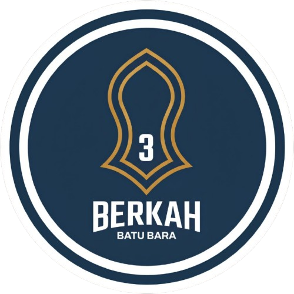

<script>
// ==========================================================================
  // MODUL PENGAJUAN & PERSETUJUAN CUTI, KALENDER TIM & SURAT RESMI
  // File: Scripts_Cuti.html
  // ==========================================================================

      // --- SUBMENU & CUTI MODULE HANDLERS ---

      window.toggleSubmenu = function (submenuId, triggerEl) {
        var submenu = document.getElementById(submenuId);
        if (!submenu) return;
        var parentLi = triggerEl.closest('.nav-item-dropdown') || triggerEl.parentElement;
        var isOpen = !submenu.classList.contains('d-none');
        if (isOpen) {
          submenu.classList.add('d-none');
          if (parentLi) parentLi.classList.remove('submenu-open');
        } else {
          submenu.classList.remove('d-none');
          if (parentLi) parentLi.classList.add('submenu-open');
        }
      };

      window.handleJenisCutiChange = function () {
        var jenis = document.getElementById('cutiJenis').value;
        var colLainnya = document.getElementById('cutiJenisLainnyaCol');
        var inputLainnya = document.getElementById('cutiJenisLainnya');
        var alertSakit = document.getElementById('cutiSakitAlert');
        var colRoster = document.getElementById('cutiPolaRosterCol');
        var selectRoster = document.getElementById('cutiPolaRoster');
        var alertRoster = document.getElementById('cutiRosterInfoAlert');

        if (jenis === 'Lainnya') {
          colLainnya.classList.remove('d-none');
          inputLainnya.setAttribute('required', 'required');
        } else {
          colLainnya.classList.add('d-none');
          inputLainnya.removeAttribute('required');
          inputLainnya.value = '';
        }

        if (jenis === 'Cuti Roster') {
          colRoster.classList.remove('d-none');
          selectRoster.setAttribute('required', 'required');
          populateCutiRosterSelect();
        } else {
          colRoster.classList.add('d-none');
          selectRoster.removeAttribute('required');
          selectRoster.value = '';
          alertRoster.classList.add('d-none');
          alertRoster.innerHTML = '';
        }

        if (jenis === 'Cuti Sakit') {
          alertSakit.classList.remove('d-none');
        } else {
          alertSakit.classList.add('d-none');
        }
      };

      window.populateCutiRosterSelect = function () {
        var sel = document.getElementById('cutiPolaRoster');
        if (!sel) return;
        var currentVal = sel.value;
        sel.innerHTML = '<option value="">-- Pilih Pola Roster --</option>';
        if (dbRoster && dbRoster.length > 0) {
          dbRoster.forEach(function (r) {
            sel.innerHTML += '<option value="' + escapeHTML(r.name) + '">' +
              escapeHTML(r.name) + ' (Kerja ' + r.workDays + ' hr, Cuti ' + r.leaveDays + ' hr)' +
              '</option>';
          });
          if (currentVal) sel.value = currentVal;
        } else {
          gasRun('getRosterList', Auth.getToken()).then(function (res) {
            if (res.success && (res.roster || res.list)) {
              dbRoster = res.roster || res.list;
              populateCutiRosterSelect();
            }
          });
        }
      };

      window.handleRosterPatternChange = function () {
        var pattern = document.getElementById('cutiPolaRoster').value;
        var alertRoster = document.getElementById('cutiRosterInfoAlert');
        if (!pattern) {
          alertRoster.classList.add('d-none');
          alertRoster.innerHTML = '';
          calculateOnsiteWorkingDays();
          return;
        }
        var r = dbRoster.find(function (item) { return item.name === pattern; });
        if (r) {
          var noteStr = r.notes || r.note || '';
          alertRoster.classList.remove('d-none');
          alertRoster.innerHTML = '<i class="bi bi-info-circle-fill me-1"></i>Pola <strong>' + escapeHTML(r.name) + '</strong>: Jatah Cuti <strong>' + r.leaveDays + ' Hari Kalender</strong> (Periode Kerja: ' + r.workDays + ' Hari).' + (noteStr ? ' <span class="text-white-50 small">(' + escapeHTML(noteStr) + ')</span>' : '');

          var startVal = document.getElementById('cutiTanggalMulai').value;
          if (startVal && Number(r.leaveDays) > 0) {
            var d = new Date(startVal + 'T00:00:00');
            d.setDate(d.getDate() + (parseInt(r.leaveDays, 10) - 1));
            var yyyy = d.getFullYear();
            var mm = String(d.getMonth() + 1).padStart(2, '0');
            var dd = String(d.getDate()).padStart(2, '0');
            document.getElementById('cutiTanggalSelesai').value = yyyy + '-' + mm + '-' + dd;
            calculateCutiDays();
          }
        }
        calculateOnsiteWorkingDays();
      };

      window.handleCutiTanggalMulaiChange = function () {
        var jenis = document.getElementById('cutiJenis').value;
        var pattern = document.getElementById('cutiPolaRoster').value;
        var startVal = document.getElementById('cutiTanggalMulai').value;
        if (jenis === 'Cuti Roster' && pattern && startVal) {
          var r = dbRoster.find(function (item) { return item.name === pattern; });
          if (r && Number(r.leaveDays) > 0) {
            var d = new Date(startVal + 'T00:00:00');
            d.setDate(d.getDate() + (parseInt(r.leaveDays, 10) - 1));
            var yyyy = d.getFullYear();
            var mm = String(d.getMonth() + 1).padStart(2, '0');
            var dd = String(d.getDate()).padStart(2, '0');
            document.getElementById('cutiTanggalSelesai').value = yyyy + '-' + mm + '-' + dd;
          }
        }
        calculateCutiDays();
        calculateOnsiteWorkingDays();
      };

      window.calculateCutiDays = function () {
        var startVal = document.getElementById('cutiTanggalMulai').value;
        var endVal = document.getElementById('cutiTanggalSelesai').value;
        var helper = document.getElementById('cutiDaysHelper');
        var inputDays = document.getElementById('cutiJumlahHari');

        if (!startVal || !endVal) {
          inputDays.value = 0;
          helper.className = 'form-text extra-small text-muted';
          helper.innerText = 'Otomatis dihitung dari rentang tanggal.';
          return;
        }

        var dStart = new Date(startVal + 'T00:00:00');
        var dEnd = new Date(endVal + 'T00:00:00');

        if (dEnd < dStart) {
          inputDays.value = 0;
          helper.className = 'form-text extra-small text-danger fw-semibold';
          helper.innerText = 'Peringatan: Tanggal selesai tidak boleh lebih awal dari tanggal mulai!';
          return;
        }

        var diffTime = Math.abs(dEnd.getTime() - dStart.getTime());
        var days = Math.round(diffTime / (1000 * 60 * 60 * 24)) + 1;
        inputDays.value = days;
        helper.className = 'form-text extra-small text-success fw-semibold';
        helper.innerText = 'Durasi cuti: ' + days + ' hari kalender (' + formatDateDMY(startVal) + ' s/d ' + formatDateDMY(endVal) + ').';
      };

      window.calculateOnsiteWorkingDays = function () {
        var tglAwalOnsite = document.getElementById('cutiTglAwalOnsite') ? document.getElementById('cutiTglAwalOnsite').value : '';
        var tglMulaiCuti = document.getElementById('cutiTanggalMulai') ? document.getElementById('cutiTanggalMulai').value : '';
        var hiddenTotal = document.getElementById('cutiTotalHariKerjaOnsite');
        var textTotal = document.getElementById('cutiTotalHariKerjaOnsiteText');
        var badgeEvaluasi = document.getElementById('cutiRosterEvaluasiBadge');
        var textKepatuhan = document.getElementById('cutiRosterKepatuhanText');

        if (!hiddenTotal || !textTotal || !badgeEvaluasi || !textKepatuhan) return;

        if (!tglAwalOnsite) {
          hiddenTotal.value = 0;
          textTotal.innerText = '0 Hari Kalender';
          badgeEvaluasi.className = 'badge bg-secondary-subtle text-secondary border border-secondary-subtle extra-small fw-bold';
          badgeEvaluasi.innerHTML = '<i class="bi bi-clock-history me-1"></i>0 Hari Onsite';
          textKepatuhan.innerHTML = '<span class="text-muted">Masukkan tanggal awal masuk site</span>';
          return;
        }

        var dNow = new Date();
        dNow.setHours(0, 0, 0, 0);
        var dStart = new Date(tglAwalOnsite + 'T00:00:00');

        if (isNaN(dStart.getTime())) {
          return;
        }

        // Hitung hari kerja aktual yang sudah berjalan hingga hari ini
        var diffNowMs = dNow.getTime() - dStart.getTime();
        var elapsedNow = Math.floor(diffNowMs / (1000 * 60 * 60 * 24)) + 1;
        if (elapsedNow < 1) elapsedNow = 0;

        // Ambil target pola roster
        var polaVal = document.getElementById('cutiPolaRoster') ? document.getElementById('cutiPolaRoster').value : '';
        var user = (typeof Auth !== 'undefined' && Auth.getUser) ? Auth.getUser() : null;
        if (!polaVal && user && user.polaRoster && user.polaRoster !== 'Non-Roster') {
          polaVal = user.polaRoster;
        }
        var rItem = (typeof dbRoster !== 'undefined' && dbRoster && dbRoster.length) ? dbRoster.find(function (r) { return r.name === polaVal; }) : null;
        var targetWorkDays = rItem ? parseInt(rItem.workDays, 10) : 0;

        if (!tglMulaiCuti) {
          // Tanggal cuti belum dipilih -> Tampilkan hari kerja riil yang sedang berjalan s/d hari ini
          hiddenTotal.value = elapsedNow;
          textTotal.innerHTML = '<strong>' + elapsedNow + ' Hari Kalender</strong> <small class="text-muted extra-small d-block">(Aktual berjalan s/d hari ini: ' + formatDateDMY(tglAwalOnsite) + ' s/d ' + formatDateDMY(dNow) + ')</small>';

          if (targetWorkDays > 0) {
            if (elapsedNow >= targetWorkDays) {
              var over = elapsedNow - targetWorkDays;
              badgeEvaluasi.className = 'badge bg-success-subtle text-success border border-success-subtle extra-small fw-bold';
              badgeEvaluasi.innerHTML = '<i class="bi bi-check-circle-fill me-1"></i>Sudah Target (' + elapsedNow + ' Hari Aktual)';
              textKepatuhan.innerHTML = '<span class="text-success fw-bold">Hari ke-' + elapsedNow + ' (Target ' + targetWorkDays + ' hr tercapai' + (over > 0 ? ', Over-Roster +' + over + ' hr' : '') + ')</span>';
            } else {
              var rem = targetWorkDays - elapsedNow;
              badgeEvaluasi.className = 'badge bg-primary-subtle text-primary border border-primary-subtle extra-small fw-bold';
              badgeEvaluasi.innerHTML = '<i class="bi bi-clock-history me-1"></i>Hari ke-' + elapsedNow + ' Onsite';
              textKepatuhan.innerHTML = '<span class="text-muted">Hari ke-' + elapsedNow + ' dari target ' + targetWorkDays + ' hr (' + rem + ' hr lagi)</span>';
            }
          } else {
            badgeEvaluasi.className = 'badge bg-primary-subtle text-primary border border-primary-subtle extra-small fw-bold';
            badgeEvaluasi.innerHTML = '<i class="bi bi-geo-alt-fill me-1"></i>' + elapsedNow + ' Hari Berjalan';
            textKepatuhan.innerHTML = '<span class="text-muted">Aktual s/d hari ini: ' + formatDateDMY(dNow) + '</span>';
          }
          return;
        }

        var dLeave = new Date(tglMulaiCuti + 'T00:00:00');
        if (isNaN(dLeave.getTime())) {
          return;
        }

        if (dLeave < dStart) {
          hiddenTotal.value = 0;
          textTotal.innerHTML = '<span class="text-danger fw-semibold">Tanggal masuk &gt; tanggal cuti!</span>';
          badgeEvaluasi.className = 'badge bg-danger-subtle text-danger border border-danger-subtle extra-small fw-bold';
          badgeEvaluasi.innerHTML = '<i class="bi bi-exclamation-octagon-fill me-1"></i>Tanggal Tidak Valid';
          textKepatuhan.innerHTML = '<span class="text-danger fw-bold">Tanggal masuk site tidak boleh sesudah tanggal mulai cuti</span>';
          return;
        }

        var diffLeaveMs = dLeave.getTime() - dStart.getTime();
        var totalDays = Math.round(diffLeaveMs / (1000 * 60 * 60 * 24));
        hiddenTotal.value = totalDays;

        textTotal.innerHTML =
          '<strong>' + totalDays + ' Hari Kalender</strong> <span class="text-muted extra-small">(' + formatDateDMY(tglAwalOnsite) + ' s/d ' + formatDateDMY(tglMulaiCuti) + ')</span>' +
          '<div class="extra-small text-secondary mt-1" style="font-size: 0.72rem;"><i class="bi bi-clock-history text-primary me-1"></i>Aktual berjalan s/d hari ini: <strong>Hari ke-' + elapsedNow + '</strong> (' + formatDateDMY(dNow) + ')</div>';

        // Evaluasi kepatuhan jadwal roster
        if (targetWorkDays > 0) {
          if (totalDays === targetWorkDays) {
            badgeEvaluasi.className = 'badge bg-success-subtle text-success border border-success-subtle extra-small fw-bold';
            badgeEvaluasi.innerHTML = '<i class="bi bi-check-circle-fill me-1"></i>100% Sesuai Target Roster (' + totalDays + ' Hari)';
            textKepatuhan.innerHTML = '<span class="text-success fw-bold"><i class="bi bi-check-circle-fill me-1"></i>Tepat Target Roster (' + targetWorkDays + ' Hari Kerja)</span>';
          } else if (totalDays > targetWorkDays) {
            var diff = totalDays - targetWorkDays;
            badgeEvaluasi.className = 'badge bg-warning-subtle text-warning border border-warning-subtle extra-small fw-bold';
            badgeEvaluasi.innerHTML = '<i class="bi bi-exclamation-triangle-fill me-1"></i>Over-Roster (+' + diff + ' Hari)';
            textKepatuhan.innerHTML = '<span class="text-warning fw-bold"><i class="bi bi-exclamation-triangle-fill me-1"></i>Over-Roster (+' + diff + ' hr dari target ' + targetWorkDays + ' hr)</span>';
          } else {
            var diffEarly = targetWorkDays - totalDays;
            badgeEvaluasi.className = 'badge bg-info-subtle text-info border border-info-subtle extra-small fw-bold';
            badgeEvaluasi.innerHTML = '<i class="bi bi-info-circle-fill me-1"></i>Cuti Lebih Awal (-' + diffEarly + ' Hari)';
            textKepatuhan.innerHTML = '<span class="text-info fw-bold"><i class="bi bi-info-circle-fill me-1"></i>Cuti Lebih Awal (-' + diffEarly + ' hr dari target ' + targetWorkDays + ' hr)</span>';
          }
        } else {
          badgeEvaluasi.className = 'badge bg-primary-subtle text-primary border border-primary-subtle extra-small fw-bold';
          badgeEvaluasi.innerHTML = '<i class="bi bi-geo-alt-fill me-1"></i>' + totalDays + ' Hari Onsite';
          textKepatuhan.innerHTML = '<span class="text-muted">Masa kerja onsite sebelum cuti</span>';
        }
      };

      function toDateInputString(d) {
        var y = d.getFullYear();
        var m = String(d.getMonth() + 1).padStart(2, '0');
        var day = String(d.getDate()).padStart(2, '0');
        return y + '-' + m + '-' + day;
      }

      window.formatDateDMY = function (dateStr, withTime) {
        if (!dateStr || dateStr === '-') return '-';
        if (dateStr instanceof Date) {
          var dd = String(dateStr.getDate()).padStart(2, '0');
          var mm = String(dateStr.getMonth() + 1).padStart(2, '0');
          var yyyy = dateStr.getFullYear();
          var res = dd + '/' + mm + '/' + yyyy;
          if (withTime) {
            var hh = String(dateStr.getHours()).padStart(2, '0');
            var min = String(dateStr.getMinutes()).padStart(2, '0');
            return res + ' ' + hh + ':' + min;
          }
          return res;
        }
        var s = String(dateStr).trim();
        var datePart = s.split('T')[0].split(' ')[0];
        var timePart = s.indexOf(' ') !== -1 ? s.split(' ')[1] : (s.indexOf('T') !== -1 ? s.split('T')[1].split('.')[0] : '');

        var d = '', m = '', y = '';
        if (datePart.indexOf('-') !== -1) {
          var p = datePart.split('-');
          if (p.length === 3) {
            if (p[0].length === 4) {
              y = p[0];
              m = p[1].padStart(2, '0');
              d = p[2].padStart(2, '0');
            } else {
              d = p[0].padStart(2, '0');
              m = p[1].padStart(2, '0');
              y = p[2];
            }
          }
        } else if (datePart.indexOf('/') !== -1) {
          var p = datePart.split('/');
          if (p.length === 3) {
            if (p[0].length === 4) {
              y = p[0];
              m = p[1].padStart(2, '0');
              d = p[2].padStart(2, '0');
            } else {
              d = p[0].padStart(2, '0');
              m = p[1].padStart(2, '0');
              y = p[2];
            }
          }
        }

        if (d && m && y) {
          var res = d + '/' + m + '/' + y;
          if (withTime && timePart) {
            return res + ' ' + timePart.slice(0, 5);
          }
          return res;
        }
        return s;
      };

      window.formatDateIndo = function (dateStr) {
        return formatDateDMY(dateStr, false);
      };

      window.renderRosterStatusCard = function (user) {
        if (!user) user = Auth.getUser();
        if (!user) return;
        var card = document.getElementById('cardRosterStatus');
        if (!card) return;

        // Jika dbKaryawan atau dbRoster belum ada, fetch otomatis di background
        if ((!dbKaryawan || dbKaryawan.length === 0 || !dbRoster || dbRoster.length === 0) && !window._fetchingInitialRosterData) {
          window._fetchingInitialRosterData = true;
          gasRun('getInitialData', Auth.getToken()).then(function (res) {
            window._fetchingInitialRosterData = false;
            if (res && res.success) {
              dbKaryawan = res.karyawan || [];
              dbRoster = res.roster || [];
              if (res.cuti) dbCutiList = res.cuti || [];
              var me = dbKaryawan.find(function (k) {
                return String(k.id || '').trim().toLowerCase() === String(user.username || '').trim().toLowerCase();
              });
              if (me) {
                user.polaRoster = me.polaRoster;
                user.tglMulaiKerja = me.tglMulaiKerja;
                user.dept = me.dept;
                user.jabatan = me.jabatan;
                user.fullname = me.name;
                Auth.setUser(user);
              }
              renderRosterStatusCard(user);
            }
          }).catch(function () {
            window._fetchingInitialRosterData = false;
          });
        }

        var empFromDb = (dbKaryawan && dbKaryawan.length) ? dbKaryawan.find(function (k) {
          return String(k.id || '').trim().toLowerCase() === String(user.username || '').trim().toLowerCase();
        }) : null;
        var pola = (empFromDb && empFromDb.polaRoster) ? empFromDb.polaRoster : (user.polaRoster || 'Non-Roster');
        var tglMulai = (empFromDb && empFromDb.tglMulaiKerja) ? empFromDb.tglMulaiKerja : (user.tglMulaiKerja || '');

        var badge = document.getElementById('rosterStatusBadge');
        var txtPola = document.getElementById('rosterCardPola');
        var descPola = document.getElementById('rosterCardPolaDesc');
        var txtTglMulai = document.getElementById('rosterCardTglMulai');
        var txtHariBerjalan = document.getElementById('rosterCardHariBerjalan');
        var txtTglCuti = document.getElementById('rosterCardTglCuti');
        var txtDurasiCuti = document.getElementById('rosterCardDurasiCuti');
        var btnApply = document.getElementById('btnApplyRosterSchedule');
        var helpAction = document.getElementById('rosterCardActionHelp');
        var progressContainer = document.getElementById('rosterProgressContainer');
        var progressText = document.getElementById('rosterProgressText');
        var progressBar = document.getElementById('rosterProgressBar');

        card.classList.remove('d-none');
        window._currentRosterSuggestion = null;

        // 1. KASUS: NON-ROSTER / REGULER
        if (!pola || pola === 'Non-Roster') {
          card.style.borderLeft = '5px solid #64748b !important';
          if (badge) {
            badge.className = 'badge bg-secondary px-3 py-2 fs-7 fw-semibold';
            badge.innerHTML = '<i class="bi bi-person-slash me-1"></i>Non-Roster / Reguler';
          }
          if (txtPola) txtPola.textContent = 'Non-Roster';
          if (descPola) descPola.textContent = 'Karyawan Reguler (Bukan Roster)';
          if (txtTglMulai) txtTglMulai.textContent = tglMulai ? formatDateIndo(tglMulai) : '-';
          if (txtHariBerjalan) txtHariBerjalan.textContent = 'Mengikuti hak cuti tahunan / reguler';
          if (txtTglCuti) txtTglCuti.textContent = '-';
          if (txtDurasiCuti) txtDurasiCuti.textContent = 'Sesuai hak cuti tahunan';
          if (btnApply) btnApply.classList.add('d-none');
          if (helpAction) helpAction.textContent = 'Gunakan formulir di bawah untuk pengajuan Cuti Tahunan, Menikah, Sakit, dsb.';
          if (progressContainer) progressContainer.classList.add('d-none');
          return;
        }

        // 2. KASUS: POLA ROSTER ADA TAPI TANGGAL MULAI KERJA BELUM DIATUR
        if (!tglMulai) {
          card.style.borderLeft = '5px solid #f59e0b !important';
          if (badge) {
            badge.className = 'badge bg-warning text-dark px-3 py-2 fs-7 fw-semibold';
            badge.innerHTML = '<i class="bi bi-exclamation-triangle-fill me-1"></i>Tanggal Masuk Belum Diatur';
          }
          if (txtPola) txtPola.textContent = pola;

          var r = (dbRoster && dbRoster.length) ? dbRoster.find(function (item) { return item.name === pola; }) : null;
          if (descPola) descPola.textContent = r ? ('Kerja ' + r.workDays + ' hr, Cuti ' + r.leaveDays + ' hr') : 'Pola Roster Site';
          if (txtTglMulai) txtTglMulai.textContent = 'Belum Diatur';
          if (txtHariBerjalan) txtHariBerjalan.textContent = 'Hubungi HRD untuk memasukkan tanggal masuk site';
          if (txtTglCuti) txtTglCuti.textContent = '-';
          if (txtDurasiCuti) txtDurasiCuti.textContent = r ? (r.leaveDays + ' Hari Kalender') : '-';
          if (btnApply) btnApply.classList.add('d-none');
          if (helpAction) helpAction.textContent = 'HRD belum mengisi tanggal masuk site pada data karyawan.';
          if (progressContainer) progressContainer.classList.add('d-none');
          return;
        }

        // Pastikan dbRoster sudah ada
        if (!dbRoster || dbRoster.length === 0) {
          gasRun('getRosterList', Auth.getToken()).then(function (res) {
            if (res.success && (res.roster || res.list)) {
              dbRoster = res.roster || res.list;
              renderRosterStatusCard(user);
            }
          });
          return;
        }

        var rItem = dbRoster.find(function (item) { return item.name === pola; });
        var workDays = rItem ? parseInt(rItem.workDays, 10) : 0;
        var leaveDays = rItem ? parseInt(rItem.leaveDays, 10) : 0;

        if (workDays <= 0 || leaveDays <= 0) {
          if (pola.includes('12') && pola.includes('2')) { workDays = 90; leaveDays = 14; }
          else if (pola.includes('8') && pola.includes('2')) { workDays = 56; leaveDays = 14; }
          else { workDays = 60; leaveDays = 14; }
        }

        var dNow = new Date();
        dNow.setHours(0, 0, 0, 0);

        // 1. Tentukan Titik Awal Onsite Terakhir:
        // Cek apakah karyawan memiliki riwayat cuti roster terakhir yang disetujui / aktif
        var effectiveStintStart = tglMulai;
        var myEmpId = String(user.username || '').toLowerCase();
        var latestCutiRoster = (dbCutiList && dbCutiList.length) ? dbCutiList.find(function (c) {
          var isMe = (c.empId && String(c.empId).toLowerCase() === myEmpId);
          var isRoster = c.jenisCuti && String(c.jenisCuti).toLowerCase().indexOf('roster') !== -1;
          var notRejected = c.status !== 'Ditolak' && c.status !== 'Ditolak Atasan' && c.status !== 'Ditolak HRD';
          return isMe && isRoster && notRejected;
        }) : null;

        if (latestCutiRoster && latestCutiRoster.tanggalSelesai) {
          var dEndLast = new Date(latestCutiRoster.tanggalSelesai + 'T00:00:00');
          if (!isNaN(dEndLast.getTime())) {
            dEndLast.setDate(dEndLast.getDate() + 1);
            effectiveStintStart = toDateInputString(dEndLast);
          }
        }

        // 2. Perhitungan Hari Kerja Aktual yang Sedang Berjalan (Real Calendar Calculation)
        var dStart = new Date(effectiveStintStart + 'T00:00:00');
        var diffMs = dNow.getTime() - dStart.getTime();
        var elapsedDays = Math.floor(diffMs / (1000 * 60 * 60 * 24)) + 1;
        if (elapsedDays < 1) elapsedDays = 0;

        // Jadwal cuti ideal sesuai target hari kerja roster
        var dLeaveStart = new Date(dStart.getTime());
        dLeaveStart.setDate(dLeaveStart.getDate() + workDays);

        var dLeaveEnd = new Date(dLeaveStart.getTime());
        dLeaveEnd.setDate(dLeaveEnd.getDate() + (leaveDays - 1));

        var strLeaveStart = toDateInputString(dLeaveStart);
        var strLeaveEnd = toDateInputString(dLeaveEnd);

        var effectiveLeaveStart = strLeaveStart;
        var effectiveLeaveEnd = strLeaveEnd;
        if (dLeaveStart < dNow) {
          effectiveLeaveStart = toDateInputString(dNow);
          var dEffEnd = new Date(dNow.getTime());
          dEffEnd.setDate(dEffEnd.getDate() + (leaveDays - 1));
          effectiveLeaveEnd = toDateInputString(dEffEnd);
        }

        window._currentRosterSuggestion = {
          pola: pola,
          stintStart: effectiveStintStart,
          startDate: effectiveLeaveStart,
          endDate: effectiveLeaveEnd,
          leaveDays: leaveDays,
          elapsedDays: elapsedDays
        };

        var remainingDays = workDays - elapsedDays;
        var percent = Math.min(100, Math.max(0, Math.round((elapsedDays / workDays) * 100)));

        if (txtPola) txtPola.textContent = pola;
        if (descPola) descPola.textContent = 'Kerja ' + workDays + ' hr, Cuti ' + leaveDays + ' hr' + (rItem && rItem.notes ? ' (' + rItem.notes + ')' : '');
        if (txtTglMulai) txtTglMulai.textContent = formatDateIndo(effectiveStintStart);
        if (txtDurasiCuti) txtDurasiCuti.textContent = leaveDays + ' Hari Kalender';

        if (btnApply) btnApply.classList.remove('d-none');
        if (progressContainer) {
          progressContainer.classList.remove('d-none');
          if (progressText) progressText.textContent = percent + '% (' + elapsedDays + ' / ' + workDays + ' hari aktual)';
          if (progressBar) progressBar.style.width = percent + '%';
        }

        if (elapsedDays >= workDays) {
          // 🟢 SUDAH WAKTUNYA CUTI / OVER-ROSTER
          var overDays = elapsedDays - workDays;
          card.style.borderLeft = '5px solid #16a34a !important';
          if (badge) {
            badge.className = 'badge bg-success text-white px-3 py-2 fs-7 fw-semibold shadow-sm';
            badge.innerHTML = '<i class="bi bi-check-circle-fill me-1"></i>Sudah Waktunya Cuti' + (overDays > 0 ? ' (+' + overDays + ' Hari)' : '');
          }
          if (txtHariBerjalan) {
            txtHariBerjalan.innerHTML = 'Hari ke-<strong>' + elapsedDays + '</strong> (Target ' + workDays + ' hari tercapai' + (overDays > 0 ? ', <span class="text-warning fw-bold">Over-Roster +' + overDays + ' hari</span>' : '') + ')';
          }
          if (txtTglCuti) {
            txtTglCuti.innerHTML = '<span class="text-success fw-bold">Dapat diajukan sekarang</span> <small class="text-muted d-block">(Jatuh tempo: ' + formatDateIndo(strLeaveStart) + ')</small>';
          }
          if (progressBar) {
            progressBar.className = 'progress-bar progress-bar-striped progress-bar-animated bg-success';
          }
          if (btnApply) {
            btnApply.className = 'btn btn-success btn-sm fw-semibold py-2 px-3 shadow-sm w-100 mb-2';
            btnApply.innerHTML = '<i class="bi bi-calendar-check me-1"></i>Ajukan Cuti Sekarang (' + elapsedDays + ' Hari Kerja)';
          }
          if (helpAction) {
            helpAction.innerHTML = '<span class="text-success fw-semibold">Target ' + workDays + ' hari telah tercapai (Aktual: ' + elapsedDays + ' hari onsite). Klik untuk isi formulir otomatis.</span>';
          }
        } else if (remainingDays <= 7 && remainingDays > 0) {
          // 🟡 MENJELANG JADWAL CUTI
          card.style.borderLeft = '5px solid #f59e0b !important';
          if (badge) {
            badge.className = 'badge bg-warning text-dark px-3 py-2 fs-7 fw-semibold shadow-sm';
            badge.innerHTML = '<i class="bi bi-clock-history me-1"></i>Menjelang Jadwal Cuti (' + remainingDays + ' Hari Lagi)';
          }
          if (txtHariBerjalan) {
            txtHariBerjalan.innerHTML = 'Hari ke-<strong>' + elapsedDays + '</strong> dari ' + workDays + ' hari kerja (<span class="text-warning fw-bold">' + remainingDays + ' hari lagi</span>)';
          }
          if (txtTglCuti) {
            txtTglCuti.textContent = formatDateIndo(strLeaveStart) + ' s/d ' + formatDateIndo(strLeaveEnd);
          }
          if (progressBar) {
            progressBar.className = 'progress-bar progress-bar-striped progress-bar-animated bg-warning';
          }
          if (btnApply) {
            btnApply.className = 'btn btn-warning text-dark btn-sm fw-semibold py-2 px-3 shadow-sm w-100 mb-2';
            btnApply.innerHTML = '<i class="bi bi-calendar-plus me-1"></i>Gunakan Jadwal Roster Ini';
          }
          if (helpAction) {
            helpAction.innerHTML = 'Aktual ' + elapsedDays + ' hari berjalan, tersisa ' + remainingDays + ' hari lagi. Klik untuk persiapkan formulir cuti.';
          }
        } else {
          // 🔵 DALAM PERIODE KERJA
          card.style.borderLeft = '5px solid #0284c7 !important';
          if (badge) {
            badge.className = 'badge bg-info text-dark px-3 py-2 fs-7 fw-semibold';
            badge.innerHTML = '<i class="bi bi-briefcase-fill me-1"></i>Dalam Periode Kerja (' + remainingDays + ' Hari Lagi)';
          }
          if (txtHariBerjalan) {
            txtHariBerjalan.innerHTML = 'Hari ke-<strong>' + elapsedDays + '</strong> dari ' + workDays + ' hari kerja (Aktual per hari ini)';
          }
          if (txtTglCuti) {
            txtTglCuti.textContent = formatDateIndo(strLeaveStart) + ' s/d ' + formatDateIndo(strLeaveEnd);
          }
          if (progressBar) {
            progressBar.className = 'progress-bar progress-bar-striped progress-bar-animated bg-primary';
          }
          if (btnApply) {
            btnApply.className = 'btn btn-primary btn-sm fw-semibold py-2 px-3 shadow-sm w-100 mb-2';
            btnApply.innerHTML = '<i class="bi bi-calendar2-range me-1"></i>Gunakan Jadwal Ini';
          }
          if (helpAction) {
            helpAction.textContent = 'Klik untuk mengisi tanggal cuti otomatis sesuai estimasi roster (' + formatDateIndo(strLeaveStart) + ').';
          }
        }
      };

      window.applyRosterScheduleToForm = function () {
        if (!window._currentRosterSuggestion) {
          Swal.fire('Info', 'Data jadwal roster belum tersedia.', 'info');
          return;
        }
        var s = window._currentRosterSuggestion;

        var selJenis = document.getElementById('cutiJenis');
        if (selJenis) {
          selJenis.value = 'Cuti Roster';
          handleJenisCutiChange();
        }

        var selPola = document.getElementById('cutiPolaRoster');
        if (selPola) {
          selPola.value = s.pola;
          if (selPola.value !== s.pola && (!dbRoster || dbRoster.length === 0)) {
            gasRun('getRosterList', Auth.getToken()).then(function (res) {
              if (res.success && (res.roster || res.list)) {
                dbRoster = res.roster || res.list;
                populateCutiRosterSelect();
                selPola.value = s.pola;
                handleRosterPatternChange();
              }
            });
          } else {
            handleRosterPatternChange();
          }
        }

        var inputTglAwal = document.getElementById('cutiTglAwalOnsite');
        if (inputTglAwal && s.stintStart) inputTglAwal.value = s.stintStart;

        var inputStart = document.getElementById('cutiTanggalMulai');
        var inputEnd = document.getElementById('cutiTanggalSelesai');
        if (inputStart && s.startDate) inputStart.value = s.startDate;
        if (inputEnd && s.endDate) inputEnd.value = s.endDate;

        calculateCutiDays();
        calculateOnsiteWorkingDays();
        openModalPengajuanCuti();

        Swal.fire({
          icon: 'success',
          title: 'Jadwal Cuti Diterapkan!',
          text: 'Formulir telah diisi otomatis dengan jadwal Cuti Roster Anda (' + s.leaveDays + ' hari kalender). Silakan lengkapi alasan pengajuan cuti.',
          timer: 2500,
          showConfirmButton: false
        });
      };

      window.getSelectedModaTransportasi = function () {
        var selected = [];
        var checkboxes = document.querySelectorAll('.check-moda-transport:checked');
        checkboxes.forEach(function (cb) {
          if (cb.value) selected.push(cb.value);
        });
        return selected.join(', ');
      };

      window.setSelectedModaTransportasi = function (transportStr) {
        var raw = String(transportStr || '');
        var items = raw.split(',').map(function (s) { return s.trim().toLowerCase(); }).filter(Boolean);
        var checkboxes = document.querySelectorAll('.check-moda-transport');
        checkboxes.forEach(function (cb) {
          var val = cb.value.toLowerCase();
          var isChecked = items.some(function (item) {
            return item === val || val.indexOf(item) !== -1 || item.indexOf(val) !== -1;
          });
          cb.checked = isChecked;
          var parentChip = cb.closest('.transport-chip');
          if (parentChip) {
            if (isChecked) parentChip.classList.add('active');
            else parentChip.classList.remove('active');
          }
        });
      };

      document.addEventListener('change', function (e) {
        if (e.target && e.target.classList.contains('check-moda-transport')) {
          var chip = e.target.closest('.transport-chip');
          if (chip) {
            if (e.target.checked) chip.classList.add('active');
            else chip.classList.remove('active');
          }
        }
      });

      window.openModalPengajuanCuti = function () {
        var modalEl = document.getElementById('modalPengajuanCuti');
        if (!modalEl) return;
        resetCutiForm();
        initPengajuanCutiForm();
        populateCutiRosterSelect();
        if (typeof bootstrap !== 'undefined' && bootstrap.Modal) {
          if (!bsModalPengajuanCuti) {
            bsModalPengajuanCuti = new bootstrap.Modal(modalEl);
          }
        }
        if (bsModalPengajuanCuti) {
          bsModalPengajuanCuti.show();
        }
      };

      window.closeModalPengajuanCuti = function () {
        if (bsModalPengajuanCuti) {
          bsModalPengajuanCuti.hide();
        }
      };

      window.openModalEditCuti = function (cutiId) {
        var cleanId = String(cutiId || '').trim();
        var item = (typeof dbCutiList !== 'undefined' && dbCutiList) ? dbCutiList.find(function (c) {
          return String(c.id || '').trim() === cleanId;
        }) : null;

        if (!item) {
          Swal.fire('Data Tidak Ditemukan', 'Pengajuan cuti ' + cleanId + ' tidak ditemukan.', 'error');
          return;
        }

        if (typeof canUserEditCuti === 'function' && !canUserEditCuti(item)) {
          Swal.fire({
            title: 'Tidak Dapat Diedit',
            text: 'Pengajuan cuti ini sudah diproses atau disetujui oleh atasan sehingga tidak dapat diubah lagi oleh karyawan.',
            icon: 'warning',
            confirmButtonColor: '#2563eb'
          });
          return;
        }

        var editIdEl = document.getElementById('editCutiId');
        if (editIdEl) editIdEl.value = item.id;

        var noticeEl = document.getElementById('editCutiNotice');
        var noticeIdEl = document.getElementById('editCutiNoticeId');
        if (noticeEl) noticeEl.classList.remove('d-none');
        if (noticeIdEl) noticeIdEl.innerText = item.id;

        var titleEl = document.getElementById('modalPengajuanCutiTitle');
        if (titleEl) {
          titleEl.innerHTML = '<i class="bi bi-pencil-square me-2"></i>Edit Pengajuan Cuti (' + escapeHTML(item.id) + ')';
        }

        var btnSubmit = document.getElementById('btnSubmitCuti');
        if (btnSubmit) {
          btnSubmit.innerHTML = '<i class="bi bi-check2-circle me-1"></i>Simpan Perubahan';
          btnSubmit.className = 'btn btn-warning btn-sm px-4 py-2 fw-semibold btn-cuti-submit shadow-sm text-dark';
        }

        document.getElementById('cutiNamaKaryawan').value = item.namaKaryawan || '';
        document.getElementById('cutiIdKaryawan').value = item.empId || '';
        document.getElementById('cutiDept').value = item.dept || '-';
        document.getElementById('cutiJabatan').value = item.jabatan || '-';

        populateCutiRosterSelect();

        var rawJenis = String(item.jenisCuti || '').trim();
        var selectJenis = document.getElementById('cutiJenis');
        var selectRoster = document.getElementById('cutiPolaRoster');
        var colRoster = document.getElementById('cutiPolaRosterCol');
        var inputLainnya = document.getElementById('cutiJenisLainnya');
        var colLainnya = document.getElementById('cutiJenisLainnyaCol');

        if (rawJenis.indexOf('Cuti Roster') !== -1) {
          selectJenis.value = 'Cuti Roster';
          if (colRoster) colRoster.classList.remove('d-none');
          var matchRoster = rawJenis.match(/\((.*?)\)/);
          var rosterPattern = matchRoster ? matchRoster[1].trim() : (item.polaRoster || '');
          if (selectRoster && rosterPattern) {
            selectRoster.value = rosterPattern;
          }
          handleRosterPatternChange();
        } else if (rawJenis.startsWith('Lainnya:') || rawJenis.startsWith('Lainnya :')) {
          selectJenis.value = 'Lainnya';
          if (colLainnya) colLainnya.classList.remove('d-none');
          if (inputLainnya) inputLainnya.value = rawJenis.replace(/^Lainnya\s*:\s*/i, '').trim();
        } else {
          selectJenis.value = rawJenis;
          if (colRoster) colRoster.classList.add('d-none');
          if (colLainnya) colLainnya.classList.add('d-none');
        }

        var alertSakit = document.getElementById('cutiSakitAlert');
        if (alertSakit) {
          if (rawJenis === 'Cuti Sakit') {
            alertSakit.classList.remove('d-none');
          } else {
            alertSakit.classList.add('d-none');
          }
        }

        var inputTglAwalOnsite = document.getElementById('cutiTglAwalOnsite');
        if (inputTglAwalOnsite) {
          inputTglAwalOnsite.value = item.tglAwalOnsite ? parseDateToYMD(item.tglAwalOnsite) || item.tglAwalOnsite : '';
        }

        var inputMulai = document.getElementById('cutiTanggalMulai');
        var inputSelesai = document.getElementById('cutiTanggalSelesai');
        var inputJumlah = document.getElementById('cutiJumlahHari');
        if (inputMulai) inputMulai.value = item.tanggalMulai ? parseDateToYMD(item.tanggalMulai) || item.tanggalMulai : '';
        if (inputSelesai) inputSelesai.value = item.tanggalSelesai ? parseDateToYMD(item.tanggalSelesai) || item.tanggalSelesai : '';
        if (inputJumlah) inputJumlah.value = item.jumlahHari || 0;

        var inputLokasi = document.getElementById('cutiLokasiKerja');
        if (inputLokasi) inputLokasi.value = item.lokasiKerja || 'TRIOP';

        document.getElementById('cutiAlasan').value = item.alasan || '';
        document.getElementById('cutiAlamat').value = item.alamat || '';
        document.getElementById('cutiKontak').value = item.kontak || '';
        document.getElementById('cutiCatatan').value = item.catatanTambahan || '';

        var inputDrop = document.getElementById('cutiTitikDropOff');
        var valTitikEdit = item.titikDropOff || item.pointOfHire || item.pointOffHire || item.dropOff || '';
        if (inputDrop) inputDrop.value = valTitikEdit;
        var valModaEdit = item.modaTransportasi || item.transportasi || item.transport || '';
        setSelectedModaTransportasi(valModaEdit);
        var inputCatatanLog = document.getElementById('cutiCatatanLogistik');
        var valCatLogEdit = item.catatanLogistik || item.catatanTransportasi || item.catatanTiket || '';
        if (inputCatatanLog) inputCatatanLog.value = valCatLogEdit;

        var fileLampiranEl = document.getElementById('cutiLampiran');
        if (fileLampiranEl) fileLampiranEl.value = '';

        calculateOnsiteWorkingDays();
        calculateCutiDays();

        var modalEl = document.getElementById('modalPengajuanCuti');
        if (!bsModalPengajuanCuti && typeof bootstrap !== 'undefined' && bootstrap.Modal) {
          bsModalPengajuanCuti = new bootstrap.Modal(modalEl);
        }
        if (bsModalPengajuanCuti) {
          bsModalPengajuanCuti.show();
        }
      };

      window.openEditFromModal = function (cutiId, currentModalEl) {
        if (currentModalEl && typeof bootstrap !== 'undefined' && bootstrap.Modal) {
          var bsCurrent = bootstrap.Modal.getInstance(currentModalEl);
          if (bsCurrent) {
            var onHidden = function () {
              currentModalEl.removeEventListener('hidden.bs.modal', onHidden);
              setTimeout(function () {
                openModalEditCuti(cutiId);
              }, 150);
            };
            currentModalEl.addEventListener('hidden.bs.modal', onHidden);
            bsCurrent.hide();
            return;
          }
        }
        openModalEditCuti(cutiId);
      };

      window.initPengajuanCutiForm = function () {
        var user = Auth.getUser();
        if (user) {
          var empFromDb = (dbKaryawan && dbKaryawan.length) ? dbKaryawan.find(function (k) {
            return String(k.id || '').trim().toLowerCase() === String(user.username || '').trim().toLowerCase();
          }) : null;
          if (empFromDb) {
            user.fullname = empFromDb.name || user.fullname;
            user.dept = empFromDb.dept || user.dept;
            user.jabatan = empFromDb.jabatan || user.jabatan;
            user.polaRoster = empFromDb.polaRoster || user.polaRoster;
            user.tglMulaiKerja = empFromDb.tglMulaiKerja || user.tglMulaiKerja;
          }
          document.getElementById('cutiNamaKaryawan').value = user.fullname || '';
          document.getElementById('cutiIdKaryawan').value = user.username || '';
          document.getElementById('cutiDept').value = user.dept || '-';
          document.getElementById('cutiJabatan').value = user.jabatan || '-';
          var inputLokasi = document.getElementById('cutiLokasiKerja');
          if (inputLokasi && !inputLokasi.value) inputLokasi.value = 'TRIOP';
          renderRosterStatusCard(user);

          // Auto-populate Tanggal Awal Masuk Site / Onsite Terakhir
          var inputTglAwalOnsite = document.getElementById('cutiTglAwalOnsite');
          if (inputTglAwalOnsite && !inputTglAwalOnsite.value) {
            var myEmpId = String(user.username || '').trim().toLowerCase();
            var latestCutiRoster = (dbCutiList && dbCutiList.length) ? dbCutiList.find(function (c) {
              var isMe = (c.empId && String(c.empId).trim().toLowerCase() === myEmpId);
              var isRoster = c.jenisCuti && String(c.jenisCuti).toLowerCase().indexOf('roster') !== -1;
              var notRejected = c.status !== 'Ditolak' && c.status !== 'Ditolak Atasan' && c.status !== 'Ditolak HRD';
              return isMe && isRoster && notRejected;
            }) : null;

            if (latestCutiRoster && latestCutiRoster.tanggalSelesai) {
              var dEndLast = new Date(latestCutiRoster.tanggalSelesai + 'T00:00:00');
              if (!isNaN(dEndLast.getTime())) {
                dEndLast.setDate(dEndLast.getDate() + 1);
                inputTglAwalOnsite.value = toDateInputString(dEndLast);
              }
            } else {
              var tglMasukKerja = (empFromDb && empFromDb.tglMulaiKerja) ? empFromDb.tglMulaiKerja : (user.tglMulaiKerja || '');
              if (tglMasukKerja) {
                inputTglAwalOnsite.value = parseDateToYMD(tglMasukKerja) || tglMasukKerja;
              }
            }
          }
          calculateOnsiteWorkingDays();
        }
      };

      window.resetCutiForm = function () {
        document.getElementById('formPengajuanCuti').reset();
        var editIdEl = document.getElementById('editCutiId');
        if (editIdEl) editIdEl.value = '';

        var inputLokasi = document.getElementById('cutiLokasiKerja');
        if (inputLokasi) inputLokasi.value = 'TRIOP';

        var noticeEl = document.getElementById('editCutiNotice');
        if (noticeEl) noticeEl.classList.add('d-none');

        var titleEl = document.getElementById('modalPengajuanCutiTitle');
        if (titleEl) titleEl.innerHTML = '<i class="bi bi-file-earmark-plus-fill me-1"></i>Formulir Permohonan Cuti';

        var btnSubmit = document.getElementById('btnSubmitCuti');
        if (btnSubmit) {
          btnSubmit.innerHTML = '<i class="bi bi-send-fill me-1"></i>Kirim Pengajuan Cuti';
          btnSubmit.className = 'btn btn-primary btn-sm px-4 py-2 fw-semibold btn-cuti-submit shadow-sm';
        }

        var inputTglAwalOnsite = document.getElementById('cutiTglAwalOnsite');
        if (inputTglAwalOnsite) inputTglAwalOnsite.value = '';

        var inputDrop = document.getElementById('cutiTitikDropOff');
        if (inputDrop) inputDrop.value = '';
        setSelectedModaTransportasi('');
        var inputCatatanLog = document.getElementById('cutiCatatanLogistik');
        if (inputCatatanLog) inputCatatanLog.value = '';
        initPengajuanCutiForm();
        document.getElementById('cutiJumlahHari').value = 0;
        document.getElementById('cutiDaysHelper').className = 'form-text extra-small text-muted';
        document.getElementById('cutiDaysHelper').innerText = 'Otomatis dihitung dari rentang tanggal.';
        document.getElementById('cutiJenisLainnyaCol').classList.add('d-none');
        document.getElementById('cutiSakitAlert').classList.add('d-none');
        var colRoster = document.getElementById('cutiPolaRosterCol');
        if (colRoster) colRoster.classList.add('d-none');
        var alertRoster = document.getElementById('cutiRosterInfoAlert');
        if (alertRoster) {
          alertRoster.classList.add('d-none');
          alertRoster.innerHTML = '';
        }
        calculateOnsiteWorkingDays();
      };

      window.handleSavePengajuanCuti = function () {
        var lokasiKerja = document.getElementById('cutiLokasiKerja') ? document.getElementById('cutiLokasiKerja').value.trim() : 'TRIOP';
        var jenis = document.getElementById('cutiJenis').value;
        if (jenis === 'Lainnya') {
          var lainnyaVal = document.getElementById('cutiJenisLainnya').value.trim();
          if (!lainnyaVal) {
            showFormValidationWarning('cutiJenisLainnya', 'Silakan sebutkan jenis cuti lainnya.');
            return;
          }
          jenis = 'Lainnya: ' + lainnyaVal;
        }

        var polaRoster = '';
        if (jenis === 'Cuti Roster') {
          polaRoster = document.getElementById('cutiPolaRoster').value.trim();
          if (!polaRoster) {
            showFormValidationWarning('cutiPolaRoster', 'Silakan pilih pola roster yang berlaku.');
            return;
          }
        }

        var tglAwalOnsite = document.getElementById('cutiTglAwalOnsite') ? document.getElementById('cutiTglAwalOnsite').value : '';
        var totalHariKerjaOnsite = document.getElementById('cutiTotalHariKerjaOnsite') ? parseInt(document.getElementById('cutiTotalHariKerjaOnsite').value, 10) : 0;
        var tglMulai = document.getElementById('cutiTanggalMulai').value;
        var tglSelesai = document.getElementById('cutiTanggalSelesai').value;
        var jmlHari = parseInt(document.getElementById('cutiJumlahHari').value, 10);
        var alasan = document.getElementById('cutiAlasan').value.trim();
        var alamat = document.getElementById('cutiAlamat').value.trim();
        var kontak = document.getElementById('cutiKontak').value.trim();
        var catatan = document.getElementById('cutiCatatan').value.trim();
        var titikDropOff = document.getElementById('cutiTitikDropOff') ? document.getElementById('cutiTitikDropOff').value.trim() : '';
        var modaTransportasi = getSelectedModaTransportasi();
        var catatanLogistik = document.getElementById('cutiCatatanLogistik') ? document.getElementById('cutiCatatanLogistik').value.trim() : '';
        var fileInput = document.getElementById('cutiLampiran');

        if (!lokasiKerja) {
          showFormValidationWarning('cutiLokasiKerja', 'Lokasi kerja / jobsite wajib dipilih.');
          return;
        }
        if (!jenis) {
          showFormValidationWarning('cutiJenis', 'Jenis cuti wajib dipilih.');
          return;
        }
        if (!tglAwalOnsite) {
          showFormValidationWarning('cutiTglAwalOnsite', 'Tanggal awal masuk site / onsite terakhir wajib diisi.');
          return;
        }
        if (!tglMulai) {
          showFormValidationWarning('cutiTanggalMulai', 'Data tanggal mulai cuti wajib diisi.');
          return;
        }
        if (new Date(tglMulai) < new Date(tglAwalOnsite)) {
          showFormValidationWarning('cutiTglAwalOnsite', 'Tanggal awal masuk site tidak boleh sesudah tanggal mulai cuti.');
          return;
        }
        if (!tglSelesai) {
          showFormValidationWarning('cutiTanggalSelesai', 'Data tanggal selesai cuti wajib diisi.');
          return;
        }
        if (new Date(tglSelesai) < new Date(tglMulai)) {
          showFormValidationWarning('cutiTanggalSelesai', 'Tanggal selesai cuti tidak boleh mendahului tanggal mulai cuti.');
          return;
        }
        if (!jmlHari || jmlHari <= 0 || isNaN(jmlHari)) {
          showFormValidationWarning('cutiTanggalMulai', 'Rentang tanggal cuti belum valid.');
          return;
        }
        if (!alasan) {
          showFormValidationWarning('cutiAlasan', 'Alasan permohonan cuti wajib diisi.');
          return;
        }
        if (!alamat) {
          showFormValidationWarning('cutiAlamat', 'Alamat selama cuti wajib diisi.');
          return;
        }

        var file = fileInput.files && fileInput.files[0] ? fileInput.files[0] : null;
        if (file && file.size > 5242880) {
          showFormValidationWarning('cutiLampiran', 'Ukuran berkas lampiran maksimal 5 MB.');
          return;
        }

        var editId = document.getElementById('editCutiId') ? document.getElementById('editCutiId').value.trim() : '';
        var isEdit = Boolean(editId);

        var confirmTitle = isEdit ? 'Simpan Perubahan Pengajuan Cuti?' : 'Kirim Pengajuan Cuti?';
        var confirmText = isEdit
          ? 'Perubahan data pengajuan cuti ' + editId + ' selama ' + jmlHari + ' hari kalender (' + formatDateDMY(tglMulai) + ' s/d ' + formatDateDMY(tglSelesai) + ') akan disimpan.'
          : 'Permohonan cuti selama ' + jmlHari + ' hari kalender (' + formatDateDMY(tglMulai) + ' s/d ' + formatDateDMY(tglSelesai) + ') akan dikirim.';
        var confirmBtnText = isEdit ? 'Ya, Simpan Perubahan' : 'Ya, Kirim Sekarang';
        var confirmBtnColor = isEdit ? '#d97706' : '#2563eb';
        var loadingText = isEdit ? 'Menyimpan perubahan data cuti...' : 'Mengunggah & memproses pengajuan cuti...';

        Swal.fire({
          title: confirmTitle,
          text: confirmText,
          icon: 'question',
          showCancelButton: true,
          confirmButtonColor: confirmBtnColor,
          cancelButtonColor: '#64748b',
          confirmButtonText: confirmBtnText,
          cancelButtonText: 'Periksa Kembali'
        }).then(function (result) {
          if (!result.isConfirmed) return;

          showFullPageLoading(loadingText);

          var processUpload = function (fileData) {
            var payload = {
              cutiId: editId,
              lokasiKerja: lokasiKerja,
              jenisCuti: jenis,
              polaRoster: polaRoster,
              tglAwalOnsite: tglAwalOnsite,
              totalHariKerjaOnsite: totalHariKerjaOnsite,
              tanggalMulai: tglMulai,
              tanggalSelesai: tglSelesai,
              jumlahHari: jmlHari,
              alasanCuti: alasan,
              alamatCuti: alamat,
              nomorKontak: kontak,
              catatanTambahan: catatan,
              titikDropOff: titikDropOff,
              modaTransportasi: modaTransportasi,
              catatanLogistik: catatanLogistik,
              lampiranBase64: fileData ? fileData.data : '',
              lampiranName: fileData ? fileData.name : '',
              lampiranMimeType: fileData ? fileData.type : ''
            };

            var targetAction = isEdit ? 'editPengajuanCuti' : 'submitPengajuanCuti';

            gasRun(targetAction, Auth.getToken(), payload).then(function (res) {
              hideFullPageLoading();
              if (handleSessionExpired(res)) return;
              if (res.success) {
                if (bsModalPengajuanCuti) {
                  bsModalPengajuanCuti.hide();
                }
                Swal.fire({
                  title: 'Berhasil!',
                  text: res.message || (isEdit ? 'Data pengajuan cuti berhasil diperbarui.' : 'Pengajuan cuti berhasil dikirim.'),
                  icon: 'success',
                  showCancelButton: !isEdit,
                  confirmButtonColor: '#2563eb',
                  cancelButtonColor: '#64748b',
                  confirmButtonText: isEdit ? 'OK' : 'Buka Riwayat Cuti',
                  cancelButtonText: 'Tetap di Sini'
                }).then(function (swalRes) {
                  resetCutiForm();
                  if (typeof loadRiwayatCuti === 'function') {
                    loadRiwayatCuti(false);
                  }
                  if (!isEdit && swalRes && swalRes.isConfirmed) {
                    showPage('riwayat-cuti', document.getElementById('subitem-riwayat-cuti'));
                  }
                });
              } else {
                Swal.fire(isEdit ? 'Gagal Memperbarui Cuti' : 'Gagal Mengajukan Cuti', res.message || 'Terjadi kesalahan sistem.', 'error');
              }
            }).catch(function (err) {
              hideFullPageLoading();
              Swal.fire('Error Server', err.message || err.toString(), 'error');
            });
          };

          if (file) {
            readFileAsBase64(file).then(function (fileData) {
              processUpload(fileData);
            }).catch(function (readErr) {
              hideFullPageLoading();
              Swal.fire('Error Berkas', 'Gagal membaca berkas lampiran: ' + readErr.toString(), 'error');
            });
          } else {
            processUpload(null);
          }
        });
      };

      var currentPageCuti = 1;
      var isFilterApprovalOnly = false;
      var currentPageMyCuti = 1;
      var currentPagePersetujuanCuti = 1;

      window.toggleFilterPerluApproval = function () {
        isFilterApprovalOnly = !isFilterApprovalOnly;
        var btn = document.getElementById('btnQuickPerluApproval');
        if (btn) {
          if (isFilterApprovalOnly) {
            btn.className = 'btn btn-sm btn-warning text-dark fw-bold shadow-xs';
          } else {
            btn.className = 'btn btn-sm btn-outline-warning text-dark fw-semibold shadow-xs';
          }
        }
        currentPagePersetujuanCuti = 1;
        renderPersetujuanCutiTable();
      };

      window.openPersetujuanCutiMenu = function (navEl) {
        isFilterApprovalOnly = false;
        var btnQuick = document.getElementById('btnQuickPerluApproval');
        if (btnQuick) {
          btnQuick.className = 'btn btn-sm btn-outline-warning text-dark fw-semibold shadow-xs';
        }
        showPage('persetujuan-cuti', navEl || document.getElementById('subitem-persetujuan-cuti'));
      };

      window.resetFilterCuti = function () {
        var sInput = document.getElementById('searchCuti');
        if (sInput) sInput.value = '';
        var fStatus = document.getElementById('filterStatusCuti');
        if (fStatus) fStatus.value = 'SEMUA';
        currentPageMyCuti = 1;
        renderRiwayatCutiTable();
      };

      window.resetFilterPersetujuanCuti = function () {
        var sInput = document.getElementById('searchPersetujuanCuti');
        if (sInput) sInput.value = '';
        var fStatus = document.getElementById('filterStatusPersetujuanCuti');
        if (fStatus) fStatus.value = 'SEMUA';
        isFilterApprovalOnly = false;
        var btnQuick = document.getElementById('btnQuickPerluApproval');
        if (btnQuick) {
          btnQuick.className = 'btn btn-sm btn-outline-warning text-dark fw-semibold shadow-xs';
        }
        currentPagePersetujuanCuti = 1;
        renderPersetujuanCutiTable();
      };

      // Helper periksa apakah role atau jabatan termasuk level PJO / Direktur
      function isJobPJO(jabatan, role) {
        var j = String(jabatan || '').trim().toLowerCase();
        var r = String(role || '').trim().toLowerCase();
        if (r === 'pjo' || r === 'direktur' || r === 'director') return true;
        var keywords = [
          'pjo',
          'penanggung jawab operasional',
          'penanggungjawab operasional',
          'ktt',
          'kepala teknik tambang',
          'direktur',
          'director',
          'project manager',
          'general manager'
        ];
        for (var k = 0; k < keywords.length; k++) {
          if (j.indexOf(keywords[k]) !== -1) return true;
        }
        return false;
      }

      // Helper periksa apakah role atau jabatan termasuk level Atasan/Supervisor
      function isJobAtasan(jabatan, role) {
        var r = String(role || '').trim().toLowerCase();
        var j = String(jabatan || '').trim().toLowerCase();
        if (r === 'supervisor' || r === 'atasan' || r === 'spv' || r === 'manager' || r === 'lead' || r === 'leader') return true;
        var keywords = [
          'supervisor', 'spv', 'atasan', 'manager', 'lead', 'head', 'kabag', 'kabid', 'kasie',
          'koordinator', 'direktur', 'director', 'superintendent', 'kepala', 'leader', 'tl',
          'team lead', 'pengawas', 'asmen', 'asisten manager'
        ];
        for (var k = 0; k < keywords.length; k++) {
          if (j.indexOf(keywords[k]) !== -1) return true;
        }
        return false;
      }

      function cleanDept(d) {
        if (!d) return '';
        var s = String(d).toLowerCase().trim();
        s = s.replace(/[^a-z0-9]/g, '').trim();

        if (s === 'hr' || s === 'hrd' || s === 'humanresource' || s === 'humanresources' || s === 'personalia') return 'hrd';
        if (s === 'hrga' || s === 'hrdga' || s === 'hrandga' || s === 'hrdandga' || s === 'humanresourcegeneralaffair' || s === 'humanresourceandgeneralaffair') return 'hrga';
        if (s === 'it' || s === 'ti' || s === 'informationtechnology' || s === 'teknologiinformasi' || s === 'edp' || s === 'ict') return 'it';
        if (s === 'finance' || s === 'keuangan' || s === 'fa' || s === 'financeaccounting' || s === 'accounting') return 'finance';
        if (s === 'ga' || s === 'generalaffair' || s === 'generalaffairs' || s === 'umum') return 'ga';
        return s;
      }

      function isSameDept(dept1, dept2) {
        var c1 = cleanDept(dept1);
        var c2 = cleanDept(dept2);
        if (!c1 || !c2) return false;
        if (c1 === c2) return true;
        if ((c1 === 'hrga' && (c2 === 'hrd' || c2 === 'ga' || c2.indexOf('hr') === 0 || c2.slice(-2) === 'ga')) ||
          (c2 === 'hrga' && (c1 === 'hrd' || c1 === 'ga' || c1.indexOf('hr') === 0 || c1.slice(-2) === 'ga'))) return true;
        if (c1 === 'it' && (c2.indexOf('it') === 0 || c2.slice(-2) === 'it')) return true;
        if (c2 === 'it' && (c1.indexOf('it') === 0 || c1.slice(-2) === 'it')) return true;
        if (c1.length >= 3 && c2.length >= 3) {
          if (c1.indexOf(c2) !== -1 || c2.indexOf(c1) !== -1) return true;
        }
        return false;
      }

      function normalizeDept(d) {
        return cleanDept(d);
      }

      // Helper hak akses approval cuti sesuai aturan departemen & level
      function canUserApproveCuti(item) {
        var user = Auth.getUser();
        if (!user || !item) return false;
        var uRole = String(user.role || '').toLowerCase();
        var uDept = String(user.dept || '');
        var uJab = String(user.jabatan || '').toLowerCase();
        var uName = String(user.username || '').toLowerCase();

        var isAdmin = (uRole === 'admin' || uName === 'admin');
        var isHRD = (isAdmin || uRole === 'hrd');
        var isSupervisor = (uRole === 'supervisor' || uRole === 'atasan' || isJobAtasan(uJab, uRole));
        var isPJO = isJobPJO(uJab, uRole);
        var canApprovePJO = (isPJO || isAdmin);

        var rowEmp = String(item.empId || '').toLowerCase();
        var rowDept = String(item.dept || '');
        var status = String(item.status || '').trim();

        // 1. Cegah approval diri sendiri kecuali akun Admin Master
        if (rowEmp === uName && !isAdmin) return false;

        // Cek apakah pemohon adalah Atasan / Supervisor
        var applicantObj = (typeof dbKaryawan !== 'undefined' && dbKaryawan) ? dbKaryawan.find(function (k) {
          return String(k.id || '').toLowerCase() === rowEmp;
        }) : null;
        var applicantRole = item.applicantRole || (applicantObj ? applicantObj.role : '');
        var applicantJabatan = applicantObj ? applicantObj.jabatan : (item.jabatan || '');
        var applicantDept = applicantObj ? applicantObj.dept : rowDept;
        var isApplicantAtasan = isJobAtasan(applicantJabatan, applicantRole);

        // Fleksibilitas status persetujuan
        var statusLower = status.toLowerCase();
        var isPendingAtasan = (statusLower.indexOf('atasan') !== -1 || status === 'Menunggu Persetujuan' || status === 'Menunggu' || status === 'Pending');
        var isPendingHRD = (statusLower.indexOf('hrd') !== -1);
        var isPendingPJO = (statusLower.indexOf('pjo') !== -1 || statusLower.indexOf('direktur') !== -1);

        // TAHAP 1: Menunggu Persetujuan Atasan
        if (isPendingAtasan) {
          if (isApplicantAtasan) {
            // Jika pemohon atasan, langsung di-handle HRD
            return isHRD;
          }
          if (isHRD) return true; // HRD bisa approv semua departemen
          if (isSupervisor) {
            // Atasan HANYA bisa approv untuk karyawan yang SAMA departemennya
            if (isSameDept(uDept, applicantDept) || isSameDept(uDept, rowDept)) return true;
          }
          return false;
        }

        // TAHAP 2: Menunggu Persetujuan HRD
        if (isPendingHRD) {
          return isHRD; // Hanya HRD / Admin
        }

        // TAHAP 3: Menunggu Persetujuan PJO / Direktur
        if (isPendingPJO) {
          return canApprovePJO; // PJO, Direktur, atau Admin (wewenang cadangan)
        }

        return false;
      }

      function getCutiStatusBadge(status) {
        var s = String(status || '').trim();
        if (s === 'Menunggu Persetujuan PJO' || s === 'Menunggu Persetujuan Direktur') {
          return { cls: 'bg-pjo text-white', icon: 'bi-award-fill', label: 'Menunggu PJO' };
        } else if (s === 'Menunggu Persetujuan HRD') {
          return { cls: 'bg-info text-dark', icon: 'bi-clock-history', label: 'Menunggu HRD' };
        } else if (s === 'Disetujui') {
          return { cls: 'bg-success text-white', icon: 'bi-check-circle-fill', label: 'Disetujui' };
        } else if (s === 'Ditolak PJO') {
          return { cls: 'bg-danger text-white', icon: 'bi-x-circle-fill', label: 'Ditolak PJO' };
        } else if (s === 'Ditolak Atasan') {
          return { cls: 'bg-danger text-white', icon: 'bi-x-circle-fill', label: 'Ditolak Atasan' };
        } else if (s === 'Ditolak HRD') {
          return { cls: 'bg-danger text-white', icon: 'bi-x-circle-fill', label: 'Ditolak HRD' };
        } else if (s.indexOf('Ditolak') !== -1) {
          return { cls: 'bg-danger text-white', icon: 'bi-x-circle-fill', label: 'Ditolak' };
        } else {
          return { cls: 'bg-warning text-dark', icon: 'bi-hourglass-split', label: 'Menunggu Atasan' };
        }
      }

      window.loadRiwayatCuti = function (isBackground) {
        var token = Auth.getToken();
        if (!token) return;

        var tbodyRiwayat = document.getElementById('tbodyRiwayatCuti');
        var tbodyPersetujuan = document.getElementById('tbodyPersetujuanCuti');

        if (!isBackground) {
          if (tbodyRiwayat) {
            tbodyRiwayat.innerHTML =
              '<tr><td colspan="10" class="text-center py-5 text-muted">' +
              '<div class="spinner-border spinner-border-sm text-primary mb-2" role="status"></div>' +
              '<p class="mb-0">Memuat riwayat pengajuan cuti Anda...</p></td></tr>';
          }
          if (tbodyPersetujuan) {
            tbodyPersetujuan.innerHTML =
              '<tr><td colspan="11" class="text-center py-5 text-muted">' +
              '<div class="spinner-border spinner-border-sm text-primary mb-2" role="status"></div>' +
              '<p class="mb-0">Memuat daftar persetujuan cuti...</p></td></tr>';
          }
        }

        gasRun('getCutiKaryawan', token).then(function (res) {
          if (handleSessionExpired(res)) return;
          if (res.success) {
            if (res.debugInfo) {
              lastCutiDebugInfo = res.debugInfo;
            }
            if (res.currentUserProfile) {
              Auth.setUser(res.currentUserProfile);
              var u = res.currentUserProfile;
              var nameEl = document.getElementById('userDisplayName');
              if (nameEl) {
                nameEl.innerText = u.username + ' - ' + u.fullname + ' (' + u.role + (u.dept ? ' • ' + u.dept : '') + ')';
              }
            }

            dbCutiList = res.list || res.cuti || [];

            // Auto-compute totalHariKerjaOnsite jika belum tersimpan di sheet
            dbCutiList.forEach(function (c) {
              if ((c.totalHariKerjaOnsite === undefined || c.totalHariKerjaOnsite === null || c.totalHariKerjaOnsite === '') && c.tglAwalOnsite && c.tanggalMulai) {
                var dOn = new Date(c.tglAwalOnsite + 'T00:00:00');
                var dMulai = new Date(c.tanggalMulai + 'T00:00:00');
                if (!isNaN(dOn.getTime()) && !isNaN(dMulai.getTime()) && dMulai >= dOn) {
                  c.totalHariKerjaOnsite = Math.round((dMulai.getTime() - dOn.getTime()) / (1000 * 60 * 60 * 24));
                }
              }
            });

            // Hitung badge approval yang memerlukan aksi pengguna login
            var needApprovalCount = 0;
            dbCutiList.forEach(function (c) {
              if (canUserApproveCuti(c)) needApprovalCount++;
            });

            // Update badge sidebar, bottom nav, & dashboard approval
            var badgeNav = document.getElementById('badgeNavApproval');
            if (badgeNav) {
              badgeNav.innerText = needApprovalCount;
              if (needApprovalCount > 0) {
                badgeNav.classList.remove('d-none');
              } else {
                badgeNav.classList.add('d-none');
              }
            }

            var badgeBNav = document.getElementById('badgeBottomNavCuti');
            if (badgeBNav) {
              badgeBNav.innerText = needApprovalCount;
              if (needApprovalCount > 0) {
                badgeBNav.classList.remove('d-none');
              } else {
                badgeBNav.classList.add('d-none');
              }
            }

            var badgeDash = document.getElementById('badgeDashApproval');
            if (badgeDash) {
              badgeDash.innerText = needApprovalCount;
              if (needApprovalCount > 0) {
                badgeDash.classList.remove('d-none');
              } else {
                badgeDash.classList.add('d-none');
              }
            }

            var badgePerlu = document.getElementById('badgePerluApproval');
            if (badgePerlu) {
              badgePerlu.innerText = needApprovalCount;
            }

            // Render ketiga halaman (Riwayat, Persetujuan, dan Kalender)
            currentPageMyCuti = 1;
            renderRiwayatCutiTable();
            currentPagePersetujuanCuti = 1;
            renderPersetujuanCutiTable();
            renderKalenderCuti();
          } else {
            if (tbodyRiwayat) {
              tbodyRiwayat.innerHTML =
                '<tr><td colspan="10" class="text-center py-4 text-muted">' +
                '<p class="mb-2">' + (res.message || 'Gagal memuat riwayat cuti.') + '</p>' +
                '<button type="button" class="btn btn-sm btn-outline-primary" onclick="loadRiwayatCuti()"><i class="bi bi-arrow-clockwise me-1"></i>Muat Ulang</button>' +
                '</td></tr>';
            }
            if (tbodyPersetujuan) {
              tbodyPersetujuan.innerHTML =
                '<tr><td colspan="11" class="text-center py-4 text-muted">' +
                '<p class="mb-2">' + (res.message || 'Gagal memuat daftar persetujuan.') + '</p>' +
                '<button type="button" class="btn btn-sm btn-outline-primary" onclick="loadRiwayatCuti()"><i class="bi bi-arrow-clockwise me-1"></i>Muat Ulang</button>' +
                '</td></tr>';
            }
          }
        }).catch(function (err) {
          if (tbodyRiwayat) {
            tbodyRiwayat.innerHTML =
              '<tr><td colspan="10" class="text-center py-4 text-danger">' +
              '<p class="mb-2">Gagal menghubungi server: ' + err.toString() + '</p>' +
              '<button type="button" class="btn btn-sm btn-outline-danger" onclick="loadRiwayatCuti()"><i class="bi bi-arrow-clockwise me-1"></i>Coba Lagi</button>' +
              '</td></tr>';
          }
          if (tbodyPersetujuan) {
            tbodyPersetujuan.innerHTML =
              '<tr><td colspan="11" class="text-center py-4 text-danger">' +
              '<p class="mb-2">Gagal menghubungi server: ' + err.toString() + '</p>' +
              '<button type="button" class="btn btn-sm btn-outline-danger" onclick="loadRiwayatCuti()"><i class="bi bi-arrow-clockwise me-1"></i>Coba Lagi</button>' +
              '</td></tr>';
          }
        });
      };

      window.loadPersetujuanCuti = function (isBackground) {
        window.loadRiwayatCuti(isBackground);
      };

      // ==========================================
      // HELPER OTORISASI HAPUS PENGAJUAN CUTI
      // ==========================================
      window.canUserDeleteCuti = function (item) {
        if (!item) return false;
        var user = Auth.getUser();
        if (!user) return false;

        var uRole = String(user.role || '').toLowerCase();
        var uName = String(user.username || '').toLowerCase();
        var uDept = String(user.dept || '').toLowerCase();
        var isHRD = (uRole === 'admin' || uRole === 'hrd' || uName === 'admin' || (typeof cleanDept === 'function' && cleanDept(uDept) === 'hrd'));

        // HRD / Admin memiliki wewenang hapus penuh
        if (isHRD) return true;

        // Pemilik pengajuan sendiri
        var isOwner = String(item.empId || '').toLowerCase() === uName;
        if (!isOwner) return false;

        var st = String(item.status || '').toLowerCase();
        // Pemilik dapat membatalkan / menghapus jika berstatus Menunggu, Ditolak, atau Dibatalkan
        if (st.indexOf('menunggu') !== -1 || st.indexOf('tolak') !== -1 || st.indexOf('batal') !== -1) {
          return true;
        }

        return false;
      };

      // ==========================================
      // HELPER OTORISASI EDIT PENGAJUAN CUTI
      // ==========================================
      window.canUserEditCuti = function (item) {
        if (!item) return false;
        var user = Auth.getUser();
        if (!user) return false;

        var uRole = String(user.role || '').toLowerCase();
        var uName = String(user.username || '').toLowerCase();
        var isAdmin = (uRole === 'admin' || uRole === 'admin master' || uName === 'admin');

        // Karyawan hanya bisa edit pengajuannya sendiri (kecuali admin)
        var isOwner = String(item.empId || '').toLowerCase() === uName;
        if (!isOwner && !isAdmin) return false;

        // Aturan Kunci: Hanya bisa di-edit sebelum di-approve oleh atasan!
        // Ketika sudah di-approve oleh atasan sampai PJO, karyawan TIDAK BISA edit.
        var status = String(item.status || '').trim();
        var app1Status = String(item.approver1Status || '').trim().toLowerCase();

        // Jika Approver 1 sudah menyetujui, sudah di tahap HRD, PJO, atau Final Disetujui -> TIDAK BISA EDIT
        if (app1Status === 'disetujui' || app1Status === 'approved') {
          return false;
        }

        if (status === 'Menunggu Persetujuan HRD' || status === 'Menunggu Persetujuan PJO' || status === 'Menunggu Persetujuan Direktur' || status === 'Disetujui') {
          return false;
        }

        // Jika sudah ditolak atau dibatalkan, tidak dapat diedit
        if (status.toLowerCase().indexOf('tolak') !== -1 || status.toLowerCase().indexOf('batal') !== -1) {
          return false;
        }

        // Boleh diedit jika masih Menunggu Persetujuan Atasan (atau Menunggu Persetujuan)
        if (status === 'Menunggu Persetujuan Atasan' || status === 'Menunggu Persetujuan') {
          return true;
        }

        return false;
      };

      // ==========================================
      // TABEL 1: RIWAYAT CUTI SAYA (PERSONAL LEAVE)
      // ==========================================
      window.renderRiwayatCutiTable = function () {
        var tbody = document.getElementById('tbodyRiwayatCuti');
        if (!tbody) return;

        var user = Auth.getUser();
        var currentUsername = String((user && user.username) || '').toLowerCase();

        // Filter ketat: HANYA pengajuan cuti milik user yang sedang login
        var myLeaves = dbCutiList.filter(function (item) {
          return String(item.empId || '').toLowerCase() === currentUsername;
        });

        var keyword = (document.getElementById('searchCuti') ? document.getElementById('searchCuti').value : '').toLowerCase().trim();
        var filterStatus = document.getElementById('filterStatusCuti') ? document.getElementById('filterStatusCuti').value : 'SEMUA';

        var filtered = myLeaves.filter(function (item) {
          var itemTitik = item.titikDropOff || item.pointOfHire || item.pointOffHire || item.dropOff || '';
          var itemModa = item.modaTransportasi || item.transportasi || item.transport || '';
          var itemCatLog = item.catatanLogistik || item.catatanTransportasi || item.catatanTiket || '';
          var matchSearch = !keyword ||
            (item.id && item.id.toLowerCase().indexOf(keyword) !== -1) ||
            (item.jenisCuti && item.jenisCuti.toLowerCase().indexOf(keyword) !== -1) ||
            (item.alasan && item.alasan.toLowerCase().indexOf(keyword) !== -1) ||
            (itemTitik && itemTitik.toLowerCase().indexOf(keyword) !== -1) ||
            (itemModa && itemModa.toLowerCase().indexOf(keyword) !== -1) ||
            (itemCatLog && itemCatLog.toLowerCase().indexOf(keyword) !== -1) ||
            (item.tanggalMulai && item.tanggalMulai.indexOf(keyword) !== -1) ||
            (item.tanggalSelesai && item.tanggalSelesai.indexOf(keyword) !== -1);

          var matchStatus = true;
          if (filterStatus === 'SEMUA') {
            matchStatus = true;
          } else if (filterStatus === 'Ditolak') {
            matchStatus = (item.status === 'Ditolak' || item.status === 'Ditolak Atasan' || item.status === 'Ditolak HRD' || item.status === 'Ditolak PJO');
          } else if (filterStatus === 'Menunggu Persetujuan Atasan') {
            matchStatus = (item.status === 'Menunggu Persetujuan Atasan' || item.status === 'Menunggu Persetujuan');
          } else {
            matchStatus = (item.status === filterStatus);
          }

          return matchSearch && matchStatus;
        });

        var badgeCount = document.getElementById('badgeCutiCount');
        if (badgeCount) badgeCount.innerText = filtered.length;

        var infoCount = document.getElementById('infoCountCuti');
        if (infoCount) infoCount.innerText = 'Menampilkan ' + filtered.length + ' permohonan cuti Anda';

        if (filtered.length === 0) {
          if (myLeaves.length === 0) {
            tbody.innerHTML = '<tr><td colspan="10" class="text-center py-5">' +
              '<div class="py-4">' +
              '<i class="bi bi-calendar2-x fs-1 text-muted d-block mb-3"></i>' +
              '<h6 class="fw-bold text-dark mb-1">Belum Ada Pengajuan Cuti</h6>' +
              '<p class="text-muted small mb-3">Anda belum memiliki riwayat pengajuan cuti pribadi.</p>' +
              '<button type="button" class="btn btn-primary btn-sm fw-semibold px-3 shadow-sm" onclick="showPage(\'pengajuan-cuti\', document.getElementById(\'subitem-pengajuan-cuti\'))">' +
              '<i class="bi bi-pencil-square me-1"></i>Ajukan Cuti Baru</button>' +
              '</div></td></tr>';
          } else {
            tbody.innerHTML = '<tr><td colspan="10" class="text-center py-5 text-muted">' +
              '<div class="py-4">' +
              '<i class="bi bi-funnel fs-1 text-muted d-block mb-3"></i>' +
              '<h6 class="fw-bold text-dark mb-1">Tidak Ada Data Yang Sesuai Filter</h6>' +
              '<p class="small mb-3">Semua permohonan cuti Anda (' + myLeaves.length + ' data) tidak cocok dengan pencarian / status yang dipilih.</p>' +
              '<button type="button" class="btn btn-sm btn-primary" onclick="resetFilterCuti()"><i class="bi bi-arrow-counterclockwise me-1"></i>Tampilkan Semua Cuti Saya (' + myLeaves.length + ' Data)</button>' +
              '</div></td></tr>';
          }
          renderPaginationControls('paginationCuti', 0, 1, function () { });
          return;
        }

        var pSize = 10;
        var startIdx = (currentPageMyCuti - 1) * pSize;
        var pageData = filtered.slice(startIdx, startIdx + pSize);

        var html = '';
        pageData.forEach(function (item, idx) {
          var rowNum = startIdx + idx + 1;
          var statusInfo = getCutiStatusBadge(item.status);

          var lampiranBtn = '<span class="text-muted extra-small">-</span>';
          if (item.lampiranFileId || item.lampiranName) {
            lampiranBtn = '<button type="button" class="btn btn-sm btn-action btn-action-lampiran" title="Lihat Berkas Lampiran" onclick="viewLampiranCuti(\'' + escapeHTML(item.id) + '\')">' +
              '<i class="bi bi-paperclip"></i>Lampiran</button>';
          }

          var editBtn = '';
          if (canUserEditCuti(item)) {
            editBtn = '<button type="button" class="btn btn-sm btn-action btn-action-edit" title="Edit Data Pengajuan Cuti" onclick="openModalEditCuti(\'' + escapeHTML(item.id) + '\')">' +
              '<i class="bi bi-pencil-square"></i>Edit</button>';
          }

          var deleteBtn = '';
          if (canUserDeleteCuti(item)) {
            deleteBtn = '<button type="button" class="btn btn-sm btn-action btn-action-delete" title="Hapus Data Riwayat Cuti" onclick="confirmHapusCuti(\'' + escapeHTML(item.id) + '\')">' +
              '<i class="bi bi-trash3"></i>Hapus</button>';
          }

          var printBtn = '';
          if (item.status === 'Disetujui') {
            printBtn = '<button type="button" class="btn btn-sm btn-action btn-action-print" title="Cetak Surat Izin Cuti Resmi" onclick="openModalCetakSuratCuti(\'' + escapeHTML(item.id) + '\')">' +
              '<i class="bi bi-printer"></i>Surat Cuti</button>';
          }

          var detailBtn = '<button type="button" class="btn btn-sm btn-action btn-action-view" title="Lihat Detail Pengajuan" onclick="viewDetailCuti(\'' + escapeHTML(item.id) + '\')">' +
            '<i class="bi bi-eye"></i>Detail</button>';

          var siteBadge = '<div class="extra-small text-muted mt-1" style="font-size: 0.72rem;"><i class="bi bi-geo-alt-fill me-1 text-danger"></i>Jobsite: <strong class="text-dark">' + escapeHTML(item.lokasiKerja || 'TRIOP') + '</strong></div>';

          var onsiteBadge = '';
          if (item.totalHariKerjaOnsite !== undefined && item.totalHariKerjaOnsite !== null && item.totalHariKerjaOnsite !== '') {
            onsiteBadge = '<div class="extra-small text-muted mt-1" style="font-size: 0.72rem;"><i class="bi bi-geo-alt me-1 text-primary"></i>Onsite: <strong class="text-dark">' + item.totalHariKerjaOnsite + ' hr</strong></div>';
          }

          var transportBadge = '';
          var valTitikRow = item.titikDropOff || item.pointOfHire || item.pointOffHire || item.dropOff || '';
          var valModaRow = item.modaTransportasi || item.transportasi || item.transport || '';
          if (valTitikRow || valModaRow) {
            var labelT = (valTitikRow ? valTitikRow : '') + (valModaRow ? ' (' + valModaRow + ')' : '');
            transportBadge = '<div class="extra-small text-truncate mt-1" style="font-size: 0.72rem; max-width: 180px;" title="Drop / Transport: ' + escapeHTML(labelT) + '"><i class="bi bi-geo-alt-fill text-danger me-1"></i><span class="text-secondary">' + escapeHTML(labelT) + '</span></div>';
          }

          html += '<tr>' +
            '<td class="ps-3 py-3 fw-bold text-muted text-center">' + rowNum + '</td>' +
            '<td class="py-3 text-nowrap"><span class="badge bg-light text-primary border font-monospace">' + escapeHTML(item.id) + '</span></td>' +
            '<td class="py-3 fw-semibold text-dark text-nowrap">' + escapeHTML(formatDateDMY(item.tanggalPengajuan, true)) + '</td>' +
            '<td class="py-3 fw-semibold text-dark">' + escapeHTML(item.jenisCuti) + siteBadge + onsiteBadge + transportBadge + '</td>' +
            '<td class="py-3 small text-nowrap">' + escapeHTML(formatDateDMY(item.tanggalMulai)) + ' <span class="text-muted">s/d</span> ' + escapeHTML(formatDateDMY(item.tanggalSelesai)) + '</td>' +
            '<td class="py-3 text-center text-nowrap"><span class="badge bg-primary-subtle text-primary fw-bold">' + item.jumlahHari + ' Hari</span></td>' +
            '<td class="py-3 text-truncate" style="max-width: 170px;" title="' + escapeHTML(item.alasan) + '">' + escapeHTML(item.alasan) + '</td>' +
            '<td class="py-3 text-center text-nowrap">' + lampiranBtn + '</td>' +
            '<td class="py-3 text-center text-nowrap"><span class="badge ' + statusInfo.cls + ' extra-small"><i class="bi ' + statusInfo.icon + ' me-1"></i>' + escapeHTML(statusInfo.label) + '</span></td>' +
            '<td class="pe-3 py-3 text-center text-nowrap">' +
            '<div class="action-group">' +
            detailBtn +
            editBtn +
            printBtn +
            deleteBtn +
            '</div>' +
            '</td>' +
            '</tr>';
        });

        tbody.innerHTML = html;

        renderPaginationControls('paginationCuti', filtered.length, currentPageMyCuti, function (newPage) {
          currentPageMyCuti = newPage;
          renderRiwayatCutiTable();
        });
      };

      // ========================================================
      // TABEL 2: PERSETUJUAN CUTI KARYAWAN (ATASAN & HRD APPROVAL)
      // ========================================================
      window.renderPersetujuanCutiTable = function () {
        var tbody = document.getElementById('tbodyPersetujuanCuti');
        if (!tbody) return;

        var user = Auth.getUser();
        if (!user) return;

        var uRole = String(user.role || '').toLowerCase();
        var uDept = String(user.dept || '');
        var uJab = String(user.jabatan || '').toLowerCase();
        var uName = String(user.username || '').toLowerCase();

        var isAdmin = (uRole === 'admin' || uName === 'admin');
        var isHRD = (isAdmin || uRole === 'hrd');
        var isSupervisor = (uRole === 'supervisor' || uRole === 'atasan' || isJobAtasan(uJab, uRole));
        var isPJO = isJobPJO(uJab, uRole);

        // Filter bawahan / karyawan untuk halaman Persetujuan
        var subordinateLeaves = dbCutiList.filter(function (item) {
          var rowEmp = String(item.empId || '').toLowerCase();
          if (isAdmin || isHRD || isPJO) {
            return true; // Admin, HRD, dan PJO/Direktur dapat melihat permohonan seluruh karyawan
          }
          if (isSupervisor) {
            if (rowEmp === uName) return false; // Jangan tampilkan cuti diri sendiri di tabel approval
            return isSameDept(uDept, item.dept);
          }
          return false;
        });

        // Hitung yang memerlukan approval
        var needApprovalCount = 0;
        subordinateLeaves.forEach(function (c) {
          if (canUserApproveCuti(c)) needApprovalCount++;
        });

        // Tampilkan info banner departemen
        var containerBanner = document.getElementById('containerAtasanBanner');
        if (containerBanner) {
          if (isPJO && !isAdmin) {
            containerBanner.classList.remove('d-none');
            containerBanner.innerHTML =
              '<div class="alert alert-light border d-flex align-items-center justify-content-between flex-wrap gap-2 p-3 shadow-xs mb-0" style="border-color: #ddd6fe !important;">' +
              '<div class="d-flex align-items-center gap-2">' +
              '<div class="rounded-circle bg-pjo-subtle d-flex align-items-center justify-content-center" style="width: 38px; height: 38px;">' +
              '<i class="bi bi-award-fill fs-5"></i>' +
              '</div>' +
              '<div>' +
              '<h6 class="fw-bold text-dark mb-0">Login sebagai PJO / Direktur</h6>' +
              '<small class="text-muted">Pengesahan Akhir (Final Approval) cuti seluruh departemen &bull; Jabatan: <strong class="text-primary">' + escapeHTML(user.jabatan || 'PJO / Direktur') + '</strong></small>' +
              '</div>' +
              '</div>' +
              (needApprovalCount > 0
                ? '<span class="badge bg-pjo px-3 py-2 fw-semibold"><i class="bi bi-bell-fill me-1"></i>' + needApprovalCount + ' Permohonan Memerlukan Persetujuan PJO</span>'
                : '<span class="badge bg-success-subtle text-success px-3 py-2 fw-semibold"><i class="bi bi-check-circle me-1"></i>Semua Permohonan Telah Diproses</span>') +
              '</div>';
          } else if (isSupervisor && !isHRD) {
            containerBanner.classList.remove('d-none');
            containerBanner.innerHTML =
              '<div class="alert alert-light border border-primary-subtle d-flex align-items-center justify-content-between flex-wrap gap-2 p-3 shadow-xs mb-0">' +
              '<div class="d-flex align-items-center gap-2">' +
              '<div class="rounded-circle bg-primary-subtle text-primary d-flex align-items-center justify-content-center" style="width: 38px; height: 38px;">' +
              '<i class="bi bi-person-badge fs-5"></i>' +
              '</div>' +
              '<div>' +
              '<h6 class="fw-bold text-dark mb-0">Login sebagai Atasan / Supervisor</h6>' +
              '<small class="text-muted">Departemen: <strong class="text-primary">' + escapeHTML(user.dept || 'Umum') + '</strong> &bull; Akun: ' + escapeHTML(user.username) + '</small>' +
              '</div>' +
              '</div>' +
              (needApprovalCount > 0
                ? '<span class="badge bg-danger px-3 py-2 fw-semibold"><i class="bi bi-bell-fill me-1"></i>' + needApprovalCount + ' Permohonan Memerlukan Persetujuan Anda</span>'
                : '<span class="badge bg-success-subtle text-success px-3 py-2 fw-semibold"><i class="bi bi-check-circle me-1"></i>Tidak Ada Permohonan Tertunda</span>') +
              '</div>';
          } else if (isHRD) {
            containerBanner.classList.remove('d-none');
            containerBanner.innerHTML =
              '<div class="alert alert-light border border-success-subtle d-flex align-items-center justify-content-between flex-wrap gap-2 p-3 shadow-xs mb-0">' +
              '<div class="d-flex align-items-center gap-2">' +
              '<div class="rounded-circle bg-success-subtle text-success d-flex align-items-center justify-content-center" style="width: 38px; height: 38px;">' +
              '<i class="bi bi-shield-check fs-5"></i>' +
              '</div>' +
              '<div>' +
              '<h6 class="fw-bold text-dark mb-0">Login sebagai HRD / Admin Master</h6>' +
              '<small class="text-muted">Wewenang persetujuan penuh seluruh departemen &amp; wewenang cadangan di setiap tahap approval.</small>' +
              '</div>' +
              '</div>' +
              (needApprovalCount > 0
                ? '<span class="badge bg-danger px-3 py-2 fw-semibold"><i class="bi bi-bell-fill me-1"></i>' + needApprovalCount + ' Permohonan Memerlukan Persetujuan</span>'
                : '<span class="badge bg-success-subtle text-success px-3 py-2 fw-semibold"><i class="bi bi-check-circle me-1"></i>Semua Permohonan Telah Diproses</span>') +
              '</div>';
          } else {
            containerBanner.classList.add('d-none');
          }
        }

        var keyword = (document.getElementById('searchPersetujuanCuti') ? document.getElementById('searchPersetujuanCuti').value : '').toLowerCase().trim();
        var filterStatus = document.getElementById('filterStatusPersetujuanCuti') ? document.getElementById('filterStatusPersetujuanCuti').value : 'SEMUA';

        var filtered = subordinateLeaves.filter(function (item) {
          var itemSubTitik = item.titikDropOff || item.pointOfHire || item.pointOffHire || item.dropOff || '';
          var itemSubModa = item.modaTransportasi || item.transportasi || item.transport || '';
          var itemSubCatLog = item.catatanLogistik || item.catatanTransportasi || item.catatanTiket || '';
          var matchSearch = !keyword ||
            (item.id && item.id.toLowerCase().indexOf(keyword) !== -1) ||
            (item.namaKaryawan && item.namaKaryawan.toLowerCase().indexOf(keyword) !== -1) ||
            (item.empId && item.empId.toLowerCase().indexOf(keyword) !== -1) ||
            (item.dept && item.dept.toLowerCase().indexOf(keyword) !== -1) ||
            (item.jenisCuti && item.jenisCuti.toLowerCase().indexOf(keyword) !== -1) ||
            (itemSubTitik && itemSubTitik.toLowerCase().indexOf(keyword) !== -1) ||
            (itemSubModa && itemSubModa.toLowerCase().indexOf(keyword) !== -1) ||
            (itemSubCatLog && itemSubCatLog.toLowerCase().indexOf(keyword) !== -1) ||
            (item.alasan && item.alasan.toLowerCase().indexOf(keyword) !== -1);

          var matchStatus = true;
          if (filterStatus === 'SEMUA') {
            matchStatus = true;
          } else if (filterStatus === 'Ditolak') {
            matchStatus = (item.status === 'Ditolak' || item.status === 'Ditolak Atasan' || item.status === 'Ditolak HRD' || item.status === 'Ditolak PJO');
          } else if (filterStatus === 'Menunggu Persetujuan Atasan') {
            matchStatus = (item.status === 'Menunggu Persetujuan Atasan' || item.status === 'Menunggu Persetujuan');
          } else {
            matchStatus = (item.status === filterStatus);
          }

          var matchApprovalOnly = true;
          if (isFilterApprovalOnly) {
            matchApprovalOnly = canUserApproveCuti(item);
          }

          return matchSearch && matchStatus && matchApprovalOnly;
        });

        var badgeCount = document.getElementById('badgePersetujuanCutiCount');
        if (badgeCount) badgeCount.innerText = filtered.length;

        var infoCount = document.getElementById('infoCountPersetujuanCuti');
        if (infoCount) infoCount.innerText = 'Menampilkan ' + filtered.length + ' permohonan karyawan';

        if (filtered.length === 0) {
          if (subordinateLeaves.length === 0) {
            if (isSupervisor && !isHRD) {
              tbody.innerHTML = '<tr><td colspan="11" class="p-4">' +
                '<div class="card border-0 shadow-sm mx-auto my-2" style="max-width: 680px; border-radius: 12px; background: #fff;">' +
                '<div class="card-body p-4 text-start">' +
                '<div class="d-flex align-items-center gap-3 mb-3">' +
                '<div class="rounded-circle bg-warning-subtle text-warning d-flex align-items-center justify-content-center flex-shrink-0" style="width: 48px; height: 48px;">' +
                '<i class="bi bi-info-circle-fill fs-4"></i>' +
                '</div>' +
                '<div>' +
                '<h6 class="fw-bold text-dark mb-0">Belum Ada Pengajuan Cuti Karyawan Departemen</h6>' +
                '<small class="text-muted">Data permohonan cuti dari anggota departemen Anda akan otomatis tampil di sini.</small>' +
                '</div>' +
                '</div>' +
                '<div class="p-3 rounded-3 mb-3" style="background-color: #f8fafc; border: 1px solid #e2e8f0;">' +
                '<div class="row g-2 small">' +
                '<div class="col-sm-6"><strong>Akun Login:</strong> ' + escapeHTML(user.fullname || user.username) + ' (' + escapeHTML(user.username) + ')</div>' +
                '<div class="col-sm-6"><strong>Role Terdeteksi:</strong> <span class="badge bg-primary-subtle text-primary">Atasan / Supervisor</span></div>' +
                '<div class="col-sm-6"><strong>Departemen Anda:</strong> <span class="badge bg-info-subtle text-info fw-bold">' + escapeHTML(user.dept || 'BELUM DIATUR') + '</span></div>' +
                '<div class="col-sm-6"><strong>Status Database:</strong> ' + (lastCutiDebugInfo ? ('Total cuti di sheet: ' + lastCutiDebugInfo.totalRowsInSheet) : 'Terhubung') + '</div>' +
                '</div>' +
                '</div>' +
                '<div class="d-flex gap-2 flex-wrap">' +
                '<button type="button" class="btn btn-sm btn-primary fw-semibold" onclick="loadRiwayatCuti()"><i class="bi bi-arrow-clockwise me-1"></i>Muat Ulang Data Cuti</button>' +
                '</div>' +
                '</div>' +
                '</div>' +
                '</td></tr>';
            } else {
              tbody.innerHTML = '<tr><td colspan="11" class="text-center py-5">' +
                '<div class="py-4">' +
                '<i class="bi bi-calendar2-x fs-1 text-muted d-block mb-3"></i>' +
                '<h6 class="fw-bold text-dark mb-1">Belum Ada Pengajuan Cuti Karyawan</h6>' +
                '<p class="text-muted small mb-3">Permohonan cuti karyawan yang sesuai wewenang akun Anda akan muncul di sini.</p>' +
                '<button type="button" class="btn btn-sm btn-outline-primary" onclick="loadRiwayatCuti()"><i class="bi bi-arrow-clockwise me-1"></i>Muat Ulang</button>' +
                '</div></td></tr>';
            }
          } else {
            tbody.innerHTML = '<tr><td colspan="11" class="text-center py-5 text-muted">' +
              '<div class="py-4">' +
              '<i class="bi bi-funnel fs-1 text-muted d-block mb-3"></i>' +
              '<h6 class="fw-bold text-dark mb-1">Tidak Ada Data Yang Sesuai Filter</h6>' +
              '<p class="small mb-3">Semua pengajuan karyawan (' + subordinateLeaves.length + ' data) tidak cocok dengan filter status/approval saat ini.</p>' +
              '<button type="button" class="btn btn-sm btn-primary" onclick="resetFilterPersetujuanCuti()"><i class="bi bi-arrow-counterclockwise me-1"></i>Tampilkan Semua Pengajuan (' + subordinateLeaves.length + ' Data)</button>' +
              '</div></td></tr>';
          }
          renderPaginationControls('paginationPersetujuanCuti', 0, 1, function () { });
          return;
        }

        var pSize = 10;
        var startIdx = (currentPagePersetujuanCuti - 1) * pSize;
        var pageData = filtered.slice(startIdx, startIdx + pSize);

        var html = '';
        pageData.forEach(function (item, idx) {
          var rowNum = startIdx + idx + 1;
          var statusInfo = getCutiStatusBadge(item.status);

          var lampiranBtn = '<span class="text-muted extra-small">-</span>';
          if (item.lampiranFileId || item.lampiranName) {
            lampiranBtn = '<button type="button" class="btn btn-sm btn-action btn-action-lampiran" title="Lihat Berkas Lampiran" onclick="viewLampiranCuti(\'' + escapeHTML(item.id) + '\')">' +
              '<i class="bi bi-paperclip"></i>Lampiran</button>';
          }

          var canApprove = canUserApproveCuti(item);
          var approveBtn = '';
          if (canApprove) {
            approveBtn = '<button type="button" class="btn btn-sm btn-action btn-action-approve" title="Proses Persetujuan Cuti" onclick="openModalApprovalCuti(\'' + escapeHTML(item.id) + '\')">' +
              '<i class="bi bi-shield-check"></i>Approval</button>';
          }

          var printBtn = '';
          if (item.status === 'Disetujui') {
            printBtn = '<button type="button" class="btn btn-sm btn-action btn-action-print" title="Cetak Surat Izin Cuti Resmi" onclick="openModalCetakSuratCuti(\'' + escapeHTML(item.id) + '\')">' +
              '<i class="bi bi-printer"></i>Surat Cuti</button>';
          }

          var detailBtn = '<button type="button" class="btn btn-sm btn-action btn-action-view" title="Lihat Detail Pengajuan" onclick="viewDetailCuti(\'' + escapeHTML(item.id) + '\')">' +
            '<i class="bi bi-eye"></i>Detail</button>';

          var editBtn = '';
          if (canUserEditCuti(item)) {
            editBtn = '<button type="button" class="btn btn-sm btn-action btn-action-edit" title="Edit Data Pengajuan Cuti" onclick="openModalEditCuti(\'' + escapeHTML(item.id) + '\')">' +
              '<i class="bi bi-pencil-square"></i>Edit</button>';
          }

          var deleteBtn = '';
          if (isHRD) {
            deleteBtn = '<button type="button" class="btn btn-sm btn-action btn-action-delete" title="Hapus Data Pengajuan Cuti" onclick="confirmHapusCuti(\'' + escapeHTML(item.id) + '\')">' +
              '<i class="bi bi-trash3"></i>Hapus</button>';
          }

          var siteBadgeSub = '<div class="extra-small text-muted mt-1" style="font-size: 0.72rem;"><i class="bi bi-geo-alt-fill me-1 text-danger"></i>Jobsite: <strong class="text-dark">' + escapeHTML(item.lokasiKerja || 'TRIOP') + '</strong></div>';

          var onsiteBadge = '';
          if (item.totalHariKerjaOnsite !== undefined && item.totalHariKerjaOnsite !== null && item.totalHariKerjaOnsite !== '') {
            onsiteBadge = '<div class="extra-small text-muted mt-1" style="font-size: 0.72rem;"><i class="bi bi-geo-alt me-1 text-primary"></i>Onsite: <strong class="text-dark">' + item.totalHariKerjaOnsite + ' hr</strong></div>';
          }

          var transportBadge = '';
          var valTitikSub = item.titikDropOff || item.pointOfHire || item.pointOffHire || item.dropOff || '';
          var valModaSub = item.modaTransportasi || item.transportasi || item.transport || '';
          if (valTitikSub || valModaSub) {
            var labelT = (valTitikSub ? valTitikSub : '') + (valModaSub ? ' (' + valModaSub + ')' : '');
            transportBadge = '<div class="extra-small text-truncate mt-1" style="font-size: 0.72rem; max-width: 180px;" title="Drop / Transport: ' + escapeHTML(labelT) + '"><i class="bi bi-geo-alt-fill text-danger me-1"></i><span class="text-secondary">' + escapeHTML(labelT) + '</span></div>';
          }

          var rowHighlight = canApprove ? 'style="background-color: #f0fdf4;"' : '';

          html += '<tr ' + rowHighlight + '>' +
            '<td class="ps-3 py-3 fw-bold text-muted text-center">' + rowNum + '</td>' +
            '<td class="py-3 text-nowrap"><span class="badge bg-light text-primary border font-monospace">' + escapeHTML(item.id) + '</span></td>' +
            '<td class="py-3"><span class="fw-bold text-dark d-block">' + escapeHTML(item.namaKaryawan || item.empId) + '</span><small class="text-muted">' + escapeHTML(item.dept || '-') + (item.empId ? ' (' + escapeHTML(item.empId) + ')' : '') + '</small></td>' +
            '<td class="py-3 fw-semibold text-dark text-nowrap">' + escapeHTML(formatDateDMY(item.tanggalPengajuan, true)) + '</td>' +
            '<td class="py-3 fw-semibold text-dark">' + escapeHTML(item.jenisCuti) + siteBadgeSub + onsiteBadge + transportBadge + '</td>' +
            '<td class="py-3 small text-nowrap">' + escapeHTML(formatDateDMY(item.tanggalMulai)) + ' <span class="text-muted">s/d</span> ' + escapeHTML(formatDateDMY(item.tanggalSelesai)) + '</td>' +
            '<td class="py-3 text-center text-nowrap"><span class="badge bg-primary-subtle text-primary fw-bold">' + item.jumlahHari + ' Hari</span></td>' +
            '<td class="py-3 text-truncate" style="max-width: 150px;" title="' + escapeHTML(item.alasan) + '">' + escapeHTML(item.alasan) + '</td>' +
            '<td class="py-3 text-center text-nowrap">' + lampiranBtn + '</td>' +
            '<td class="py-3 text-center text-nowrap"><span class="badge ' + statusInfo.cls + ' extra-small"><i class="bi ' + statusInfo.icon + ' me-1"></i>' + escapeHTML(statusInfo.label) + '</span></td>' +
            '<td class="pe-3 py-3 text-center text-nowrap">' +
            '<div class="action-group">' +
            approveBtn +
            detailBtn +
            editBtn +
            printBtn +
            deleteBtn +
            '</div>' +
            '</td>' +
            '</tr>';
        });

        tbody.innerHTML = html;

        renderPaginationControls('paginationPersetujuanCuti', filtered.length, currentPagePersetujuanCuti, function (newPage) {
          currentPagePersetujuanCuti = newPage;
          renderPersetujuanCutiTable();
        });
      };

      // Helper menghitung dan merapikan informasi periode kerja onsite (mulai s/d akhir kerja & total hari kerja)
      function getCutiWorkPeriodInfo(item) {
        if (!item) {
          return {
            tglMulaiKerja: '',
            tglAkhirKerja: '',
            totalHariKerja: 0,
            strMulai: '-',
            strAkhir: '-',
            strTotal: '-',
            polaRoster: ''
          };
        }

        var tglAwal = item.tglAwalOnsite ? String(item.tglAwalOnsite).trim() : '';
        var tglCutiMulai = item.tanggalMulai ? String(item.tanggalMulai).trim() : '';
        var myEmpId = String(item.empId || '').trim().toLowerCase();

        // 1. Jika tglAwalOnsite belum terisi pada objek, cari dari riwayat cuti sebelumnya atau data profil karyawan
        if (!tglAwal && tglCutiMulai && typeof dbCutiList !== 'undefined' && dbCutiList) {
          var curMulaiTime = new Date(tglCutiMulai + 'T00:00:00').getTime();
          var prevLeaves = dbCutiList.filter(function (c) {
            if (String(c.empId || '').toLowerCase() !== myEmpId) return false;
            if (c.id === item.id) return false;
            if (!c.tanggalSelesai) return false;
            var dEnd = new Date(c.tanggalSelesai + 'T00:00:00').getTime();
            return !isNaN(dEnd) && dEnd < curMulaiTime;
          }).sort(function (a, b) {
            return new Date(b.tanggalSelesai + 'T00:00:00').getTime() - new Date(a.tanggalSelesai + 'T00:00:00').getTime();
          });

          if (prevLeaves.length > 0 && prevLeaves[0].tanggalSelesai) {
            var dPrev = new Date(prevLeaves[0].tanggalSelesai + 'T00:00:00');
            dPrev.setDate(dPrev.getDate() + 1);
            tglAwal = toDateInputString(dPrev);
          } else if (typeof dbKaryawan !== 'undefined' && dbKaryawan) {
            var kObj = dbKaryawan.find(function (k) {
              return String(k.username || k.id || '').toLowerCase() === myEmpId;
            });
            if (kObj && kObj.tglMulaiKerja) {
              tglAwal = parseDateToYMD(kObj.tglMulaiKerja) || kObj.tglMulaiKerja;
            }
          }
        }

        // 2. Tentukan Tanggal Akhir Bekerja (hari terakhir bekerja di site, yaitu 1 hari sebelum tanggal mulai cuti)
        var tglAkhir = '';
        var dStart = tglAwal ? new Date(tglAwal + 'T00:00:00') : null;
        var dCutiMulai = tglCutiMulai ? new Date(tglCutiMulai + 'T00:00:00') : null;

        if (dCutiMulai && !isNaN(dCutiMulai.getTime())) {
          var dAkhir = new Date(dCutiMulai.getTime());
          dAkhir.setDate(dAkhir.getDate() - 1);
          if (dStart && !isNaN(dStart.getTime()) && dAkhir < dStart) {
            dAkhir = new Date(dStart.getTime());
          }
          tglAkhir = toDateInputString(dAkhir);
        }

        // 3. Tentukan Total Hari Kerja Kalender
        var totalDays = 0;
        if (item.totalHariKerjaOnsite !== undefined && item.totalHariKerjaOnsite !== null && item.totalHariKerjaOnsite !== '') {
          totalDays = parseInt(item.totalHariKerjaOnsite, 10);
        }
        if ((!totalDays || isNaN(totalDays) || totalDays <= 0) && dStart && dCutiMulai && !isNaN(dStart.getTime()) && !isNaN(dCutiMulai.getTime()) && dCutiMulai >= dStart) {
          totalDays = Math.round((dCutiMulai.getTime() - dStart.getTime()) / (1000 * 60 * 60 * 24));
        }
        if (!totalDays || isNaN(totalDays)) {
          totalDays = 0;
        }

        return {
          tglMulaiKerja: tglAwal,
          tglAkhirKerja: tglAkhir,
          totalHariKerja: totalDays,
          strMulai: tglAwal ? formatDateDMY(tglAwal) : '-',
          strAkhir: tglAkhir ? formatDateDMY(tglAkhir) : '-',
          strTotal: totalDays > 0 ? (totalDays + ' Hari Kalender') : '-',
          polaRoster: item.polaRoster || ''
        };
      }

      window.viewDetailCuti = function (cutiId) {
        var cleanId = String(cutiId || '').trim();
        var item = dbCutiList.find(function (c) {
          return String(c.id || '').trim() === cleanId;
        });
        if (!item) return;

        var statusInfo = getCutiStatusBadge(item.status);

        // Step 2 (Atasan) styling
        var step2CircleCls = 'bg-secondary text-white';
        var step2Icon = 'bi-hourglass';
        var step2BadgeCls = 'bg-secondary-subtle text-secondary';
        var step2BadgeText = 'Menunggu';
        var step2NoteHtml = '';

        if (item.approver1Status === 'Disetujui') {
          step2CircleCls = 'bg-success text-white';
          step2Icon = 'bi-check';
          step2BadgeCls = 'bg-success-subtle text-success';
          step2BadgeText = 'Disetujui';
        } else if (item.approver1Status === 'Ditolak' || item.status === 'Ditolak Atasan') {
          step2CircleCls = 'bg-danger text-white';
          step2Icon = 'bi-x';
          step2BadgeCls = 'bg-danger-subtle text-danger';
          step2BadgeText = 'Ditolak';
        }

        if (item.approver1Catatan) {
          step2NoteHtml = '<div class="extra-small text-dark mt-1 p-2 bg-light rounded border"><i class="bi bi-chat-left-text me-1 text-muted"></i><strong>Catatan:</strong> ' + escapeHTML(item.approver1Catatan) + '</div>';
        }

        // Step 3 (HRD) styling
        var step3CircleCls = 'bg-light border text-muted';
        var step3Icon = 'bi-circle';
        var step3BadgeCls = 'bg-light text-muted border';
        var step3BadgeText = 'Menunggu Tahap 1';
        var step3NoteHtml = '';

        if (item.status === 'Menunggu Persetujuan HRD') {
          step3CircleCls = 'bg-info text-dark';
          step3Icon = 'bi-hourglass-split';
          step3BadgeCls = 'bg-info-subtle text-info';
          step3BadgeText = 'Menunggu Verifikasi HRD';
        } else if (item.approver2Status === 'Disetujui' || item.status === 'Menunggu Persetujuan PJO' || item.status === 'Menunggu Persetujuan Direktur' || item.status === 'Disetujui' || item.status === 'Ditolak PJO') {
          step3CircleCls = 'bg-success text-white';
          step3Icon = 'bi-check';
          step3BadgeCls = 'bg-success-subtle text-success';
          step3BadgeText = 'Disetujui HRD';
        } else if (item.approver2Status === 'Ditolak' || item.status === 'Ditolak HRD') {
          step3CircleCls = 'bg-danger text-white';
          step3Icon = 'bi-x';
          step3BadgeCls = 'bg-danger-subtle text-danger';
          step3BadgeText = 'Ditolak HRD';
        }

        if (item.approver2Catatan) {
          step3NoteHtml = '<div class="extra-small text-dark mt-1 p-2 bg-light rounded border"><i class="bi bi-chat-left-text me-1 text-muted"></i><strong>Catatan:</strong> ' + escapeHTML(item.approver2Catatan) + '</div>';
        }

        // Step 4 (PJO / Direktur) styling
        var step4CircleCls = 'bg-light border text-muted';
        var step4Icon = 'bi-circle';
        var step4BadgeCls = 'bg-light text-muted border';
        var step4BadgeText = 'Menunggu Tahap 2';
        var step4NoteHtml = '';

        if (item.status === 'Menunggu Persetujuan PJO' || item.status === 'Menunggu Persetujuan Direktur') {
          step4CircleCls = 'bg-pjo text-white';
          step4Icon = 'bi-hourglass-split';
          step4BadgeCls = 'bg-pjo-subtle text-pjo';
          step4BadgeText = 'Menunggu Persetujuan PJO';
        } else if (item.approver3Status === 'Disetujui' || item.status === 'Disetujui') {
          step4CircleCls = 'bg-success text-white';
          step4Icon = 'bi-check';
          step4BadgeCls = 'bg-success-subtle text-success';
          step4BadgeText = 'Disetujui Final';
        } else if (item.approver3Status === 'Ditolak' || item.status === 'Ditolak PJO') {
          step4CircleCls = 'bg-danger text-white';
          step4Icon = 'bi-x';
          step4BadgeCls = 'bg-danger-subtle text-danger';
          step4BadgeText = 'Ditolak PJO';
        }

        if (item.approver3Catatan) {
          step4NoteHtml = '<div class="extra-small text-dark mt-1 p-2 bg-light rounded border"><i class="bi bi-chat-left-text me-1 text-muted"></i><strong>Catatan:</strong> ' + escapeHTML(item.approver3Catatan) + '</div>';
        }

        var rejectionBanner = '';
        if (item.alasanPenolakan || item.status.indexOf('Ditolak') !== -1) {
          var rejectReason = item.alasanPenolakan || item.approver3Catatan || item.approver2Catatan || item.approver1Catatan || 'Tidak dicantumkan alasan khusus.';
          rejectionBanner =
            '<div class="col-12 mt-2">' +
            '<div class="alert alert-danger border-danger-subtle d-flex align-items-start gap-2 mb-0 p-3">' +
            '<i class="bi bi-exclamation-octagon-fill text-danger fs-5 mt-0"></i>' +
            '<div>' +
            '<h6 class="fw-bold text-danger mb-1">Pengajuan Cuti Ditolak</h6>' +
            '<p class="small mb-0 text-dark"><strong>Alasan Penolakan:</strong> ' + escapeHTML(rejectReason) + '</p>' +
            '</div>' +
            '</div>' +
            '</div>';
        }

        var workInfo = getCutiWorkPeriodInfo(item);

        var rosterNoteHtml = '';
        if (item.polaRoster) {
          rosterNoteHtml =
            '<div class="col-12 mt-2 pt-2 border-top extra-small text-muted">' +
            '<i class="bi bi-diagram-2 text-primary me-1"></i>Pola Roster Kerja: <strong class="text-dark">' + escapeHTML(item.polaRoster) + '</strong>' +
            '</div>';
        }

        var masaKerjaSection =
          '<div class="col-12">' +
          '<div class="p-3 bg-white rounded-3 border shadow-xs" style="border-left: 4px solid #16a34a !important;">' +
          '<div class="d-flex align-items-center justify-content-between flex-wrap gap-2 mb-2 pb-2 border-bottom">' +
          '<div class="d-flex align-items-center gap-2">' +
          '<div class="rounded-circle bg-success-subtle text-success d-flex align-items-center justify-content-center" style="width: 34px; height: 34px;">' +
          '<i class="bi bi-briefcase-fill fs-6"></i>' +
          '</div>' +
          '<div>' +
          '<span class="extra-small fw-bold text-muted d-block">INFORMASI MASA KERJA SEBELUM CUTI</span>' +
          '<h6 class="fw-bold text-dark mb-0">Periode Mulai &amp; Akhir Bekerja</h6>' +
          '</div>' +
          '</div>' +
          (workInfo.totalHariKerja > 0
            ? '<span class="badge bg-success text-white px-3 py-2 fw-bold" style="font-size: 0.85rem;"><i class="bi bi-clock-history me-1"></i>Total: ' + workInfo.totalHariKerja + ' Hari Kerja</span>'
            : '<span class="badge bg-secondary-subtle text-secondary px-3 py-2">Belum Terhitung</span>') +
          '</div>' +
          '<div class="row g-2 pt-1">' +
          '<div class="col-sm-4">' +
          '<span class="extra-small fw-bold text-muted d-block">TANGGAL MULAI KERJA (MASUK SITE)</span>' +
          '<span class="fw-semibold text-dark small"><i class="bi bi-calendar-check text-primary me-1"></i>' + workInfo.strMulai + '</span>' +
          '</div>' +
          '<div class="col-sm-4">' +
          '<span class="extra-small fw-bold text-muted d-block">TANGGAL AKHIR KERJA (SEBELUM CUTI)</span>' +
          '<span class="fw-semibold text-dark small"><i class="bi bi-calendar-x text-danger me-1"></i>' + workInfo.strAkhir + '</span>' +
          '</div>' +
          '<div class="col-sm-4">' +
          '<span class="extra-small fw-bold text-muted d-block">PERIODE BEKERJA ONSITE</span>' +
          '<span class="small text-secondary font-monospace fw-semibold">' + workInfo.strMulai + ' <span class="text-muted">s/d</span> ' + workInfo.strAkhir + '</span>' +
          '</div>' +
          rosterNoteHtml +
          '</div>' +
          '</div>' +
          '</div>';

        var valTitik = item.titikDropOff || item.pointOfHire || item.pointOffHire || item.dropOff || '';
        var valModa = item.modaTransportasi || item.transportasi || item.transport || '';
        var valCatLog = item.catatanLogistik || item.catatanTransportasi || item.catatanTiket || '';

        var logistikSection = '';
        if (valTitik || valModa || valCatLog) {
          var badgesModa = '';
          if (valModa) {
            var splitted = valModa.split(',');
            badgesModa = splitted.map(function (m) {
              var trimM = m.trim();
              if (!trimM) return '';
              var icon = 'bi-car-front';
              var color = 'bg-primary-subtle text-primary border-primary-subtle';
              if (trimM.toLowerCase().indexOf('pesawat') !== -1) {
                icon = 'bi-airplane';
                color = 'bg-info-subtle text-info-emphasis border-info-subtle';
              } else if (trimM.toLowerCase().indexOf('speedboat') !== -1 || trimM.toLowerCase().indexOf('kapal') !== -1) {
                icon = 'bi-water';
                color = 'bg-teal-subtle text-teal-emphasis border-teal-subtle';
              } else if (trimM.toLowerCase().indexOf('bus') !== -1 || trimM.toLowerCase().indexOf('elf') !== -1) {
                icon = 'bi-bus-front';
                color = 'bg-warning-subtle text-warning-emphasis border-warning-subtle';
              } else if (trimM.toLowerCase().indexOf('mandiri') !== -1) {
                icon = 'bi-person';
                color = 'bg-secondary-subtle text-secondary border-secondary-subtle';
              }
              return '<span class="badge ' + color + ' border me-1 mb-1"><i class="bi ' + icon + ' me-1"></i>' + escapeHTML(trimM) + '</span>';
            }).join('');
          }

          logistikSection =
            '<div class="col-12">' +
            '<div class="p-3 bg-light rounded-3 border" style="border-left: 4px solid #0284c7 !important;">' +
            '<div class="d-flex align-items-center justify-content-between mb-2 pb-1 border-bottom">' +
            '<span class="extra-small fw-bold text-primary text-uppercase d-flex align-items-center gap-1">' +
            '<i class="bi bi-geo-alt-fill"></i> Logistik Tiket &amp; Transportasi Cuti' +
            '</span>' +
            '<span class="badge bg-light text-muted border extra-small">Roster / Perjalanan</span>' +
            '</div>' +
            '<div class="row g-2">' +
            '<div class="col-sm-5">' +
            '<span class="extra-small fw-bold text-muted d-block mb-1">TITIK DROP OFF / POINT OF HIRE</span>' +
            '<span class="small fw-semibold text-dark"><i class="bi bi-geo-alt text-danger me-1"></i>' + (valTitik ? escapeHTML(valTitik) : '<span class="text-muted fw-normal fst-italic">-</span>') + '</span>' +
            '</div>' +
            '<div class="col-sm-7">' +
            '<span class="extra-small fw-bold text-muted d-block mb-1">TRANSPORTASI</span>' +
            '<div>' + (badgesModa || '<span class="text-muted small fst-italic">Tidak ditentukan</span>') + '</div>' +
            '</div>' +
            (valCatLog ?
              '<div class="col-12 mt-1">' +
              '<span class="extra-small fw-bold text-muted d-block mb-1">CATATAN TRANSPORTASI / TIKET</span>' +
              '<div class="p-2 bg-white rounded border extra-small text-dark">' + escapeHTML(valCatLog) + '</div>' +
              '</div>' : '') +
            '</div>' +
            '</div>' +
            '</div>';
        }

        var bodyHtml =
          '<div class="row g-3">' +
          '<div class="col-md-6">' +
          '<div class="p-3 bg-light rounded-3 border">' +
          '<span class="extra-small fw-bold text-muted d-block mb-1">ID PENGAJUAN</span>' +
          '<h6 class="fw-bold text-primary font-monospace mb-2">' + escapeHTML(item.id) + '</h6>' +
          '<span class="extra-small fw-bold text-muted d-block mb-1">TANGGAL PENGAJUAN</span>' +
          '<p class="small text-dark mb-0">' + escapeHTML(formatDateDMY(item.tanggalPengajuan, true)) + '</p>' +
          '</div>' +
          '</div>' +
          '<div class="col-md-6">' +
          '<div class="p-3 bg-light rounded-3 border">' +
          '<span class="extra-small fw-bold text-muted d-block mb-1">DATA PEMOHON</span>' +
          '<h6 class="fw-bold text-dark mb-1">' + escapeHTML(item.namaKaryawan) + ' <small class="text-muted">(' + escapeHTML(item.empId) + ')</small></h6>' +
          '<p class="small text-muted mb-0">' + escapeHTML(item.jabatan || '-') + ' • ' + escapeHTML(item.dept || '-') + '</p>' +
          '</div>' +
          '</div>' +
          '<div class="col-12">' +
          '<div class="p-3 bg-light rounded-3 border">' +
          '<div class="row g-2">' +
          '<div class="col-sm-3">' +
          '<span class="extra-small fw-bold text-muted d-block">LOKASI KERJA</span>' +
          '<span class="badge bg-primary-subtle text-primary border border-primary-subtle px-2 py-1"><i class="bi bi-geo-alt-fill text-danger me-1"></i>' + escapeHTML(item.lokasiKerja || 'TRIOP') + '</span>' +
          '</div>' +
          '<div class="col-sm-3">' +
          '<span class="extra-small fw-bold text-muted d-block">JENIS CUTI</span>' +
          '<span class="fw-semibold text-dark small">' + escapeHTML(item.jenisCuti) + '</span>' +
          '</div>' +
          '<div class="col-sm-3">' +
          '<span class="extra-small fw-bold text-muted d-block">PERIODE CUTI</span>' +
          '<span class="fw-semibold text-dark small">' + escapeHTML(formatDateDMY(item.tanggalMulai)) + ' s/d ' + escapeHTML(formatDateDMY(item.tanggalSelesai)) + '</span>' +
          '</div>' +
          '<div class="col-sm-3">' +
          '<span class="extra-small fw-bold text-muted d-block">DURASI CUTI</span>' +
          '<span class="badge bg-primary fw-bold">' + item.jumlahHari + ' Hari Kalender</span>' +
          '</div>' +
          '</div>' +
          '</div>' +
          '</div>' +
          masaKerjaSection +
          '<div class="col-12">' +
          '<label class="extra-small fw-bold text-muted d-block mb-1">ALASAN CUTI</label>' +
          '<div class="p-3 bg-white border rounded-3 small text-dark">' + escapeHTML(item.alasan) + '</div>' +
          '</div>' +
          '<div class="col-md-6">' +
          '<label class="extra-small fw-bold text-muted d-block mb-1">ALAMAT SELAMA CUTI</label>' +
          '<p class="small text-dark mb-0">' + (item.alamat ? escapeHTML(item.alamat) : '<span class="text-muted fst-italic">Tidak dicantumkan</span>') + '</p>' +
          '</div>' +
          '<div class="col-md-6">' +
          '<label class="extra-small fw-bold text-muted d-block mb-1">NOMOR YANG DAPAT DIHUBUNGI</label>' +
          '<p class="small text-dark mb-0">' + (item.kontak ? escapeHTML(item.kontak) : '<span class="text-muted fst-italic">Tidak dicantumkan</span>') + '</p>' +
          '</div>' +
          logistikSection +
          '<div class="col-12">' +
          '<label class="extra-small fw-bold text-muted d-block mb-1">CATATAN TAMBAHAN</label>' +
          '<p class="small text-dark mb-0">' + (item.catatanTambahan ? escapeHTML(item.catatanTambahan) : '<span class="text-muted fst-italic">Tidak ada catatan</span>') + '</p>' +
          '</div>' +
          (item.lampiranFileId ?
            '<div class="col-12">' +
            '<div class="alert alert-light border d-flex align-items-center justify-content-between p-2 mb-0">' +
            '<span class="small text-muted"><i class="bi bi-paperclip me-1 text-primary"></i>' + escapeHTML(item.lampiranName || 'Berkas Lampiran') + '</span>' +
            '<button type="button" class="btn btn-sm btn-outline-primary py-1 px-2" onclick="viewLampiranCuti(\'' + escapeHTML(item.id) + '\')"><i class="bi bi-eye me-1"></i>Buka Lampiran</button>' +
            '</div>' +
            '</div>' : '') +

          // Visual Stepper / Timeline Approval
          '<div class="col-12 mt-2">' +
          '<div class="p-3 bg-white border rounded-3 shadow-xs">' +
          '<div class="d-flex align-items-center justify-content-between mb-3 border-bottom pb-2">' +
          '<h6 class="fw-bold text-dark mb-0"><i class="bi bi-diagram-3 text-primary me-2"></i>Status Persetujuan Bertingkat</h6>' +
          '<span class="badge ' + statusInfo.cls + '">' + escapeHTML(statusInfo.label) + '</span>' +
          '</div>' +
          '<div class="position-relative ps-4 mb-1" style="border-left: 2px dashed #cbd5e1; margin-left: 14px;">' +

          // Step 1
          '<div class="mb-4 position-relative">' +
          '<span class="position-absolute rounded-circle bg-success text-white d-flex align-items-center justify-content-center" style="left: -32px; top: 0px; width: 24px; height: 24px; font-size: 12px;"><i class="bi bi-check"></i></span>' +
          '<div class="d-flex align-items-center justify-content-between flex-wrap gap-1 mb-1">' +
          '<strong class="text-dark small">1. Pengajuan Karyawan</strong>' +
          '<span class="badge bg-success-subtle text-success extra-small">Diajukan</span>' +
          '</div>' +
          '<div class="extra-small text-muted mb-1">' +
          '<strong>' + escapeHTML(item.namaKaryawan) + '</strong> (' + escapeHTML(item.empId || '-') + ') • ' + escapeHTML(item.jabatan || '-') +
          '</div>' +
          '<div class="extra-small text-secondary"><i class="bi bi-clock me-1"></i>' + escapeHTML(formatDateDMY(item.tanggalPengajuan, true)) + '</div>' +
          '</div>' +

          // Step 2
          '<div class="mb-4 position-relative">' +
          '<span class="position-absolute rounded-circle ' + step2CircleCls + ' d-flex align-items-center justify-content-center" style="left: -32px; top: 0px; width: 24px; height: 24px; font-size: 12px;"><i class="bi ' + step2Icon + '"></i></span>' +
          '<div class="d-flex align-items-center justify-content-between flex-wrap gap-1 mb-1">' +
          '<strong class="text-dark small">2. Persetujuan Atasan / Supervisor</strong>' +
          '<span class="badge ' + step2BadgeCls + ' extra-small">' + step2BadgeText + '</span>' +
          '</div>' +
          '<div class="extra-small text-muted mb-1">' +
          '<strong>' + escapeHTML(item.approver1Nama || 'Menunggu Persetujuan Atasan') + '</strong>' + (item.approver1Jabatan ? ' • ' + escapeHTML(item.approver1Jabatan) : '') +
          '</div>' +
          '<div class="extra-small text-secondary mb-1"><i class="bi bi-clock me-1"></i>' + (item.approver1Tanggal ? escapeHTML(formatDateDMY(item.approver1Tanggal, true)) : 'Belum diproses') + '</div>' +
          step2NoteHtml +
          '</div>' +

          // Step 3
          '<div class="mb-4 position-relative">' +
          '<span class="position-absolute rounded-circle ' + step3CircleCls + ' d-flex align-items-center justify-content-center" style="left: -32px; top: 0px; width: 24px; height: 24px; font-size: 12px;"><i class="bi ' + step3Icon + '"></i></span>' +
          '<div class="d-flex align-items-center justify-content-between flex-wrap gap-1 mb-1">' +
          '<strong class="text-dark small">3. Verifikasi &amp; Persetujuan HRD</strong>' +
          '<span class="badge ' + step3BadgeCls + ' extra-small">' + step3BadgeText + '</span>' +
          '</div>' +
          '<div class="extra-small text-muted mb-1">' +
          '<strong>' + escapeHTML(item.approver2Nama || (item.status === 'Menunggu Persetujuan Atasan' || item.status === 'Menunggu Persetujuan' ? 'Menunggu Tahap 1 Selesai' : 'Menunggu Verifikasi HRD')) + '</strong>' + (item.approver2Jabatan ? ' • ' + escapeHTML(item.approver2Jabatan) : '') +
          '</div>' +
          '<div class="extra-small text-secondary mb-1"><i class="bi bi-clock me-1"></i>' + (item.approver2Tanggal ? escapeHTML(formatDateDMY(item.approver2Tanggal, true)) : 'Belum diproses') + '</div>' +
          step3NoteHtml +
          '</div>' +

          // Step 4
          '<div class="position-relative">' +
          '<span class="position-absolute rounded-circle ' + step4CircleCls + ' d-flex align-items-center justify-content-center" style="left: -32px; top: 0px; width: 24px; height: 24px; font-size: 12px;"><i class="bi ' + step4Icon + '"></i></span>' +
          '<div class="d-flex align-items-center justify-content-between flex-wrap gap-1 mb-1">' +
          '<strong class="text-dark small">4. Pengesahan Akhir PJO / Direktur (Final)</strong>' +
          '<span class="badge ' + step4BadgeCls + ' extra-small">' + step4BadgeText + '</span>' +
          '</div>' +
          '<div class="extra-small text-muted mb-1">' +
          '<strong>' + escapeHTML(item.approver3Nama || (item.status === 'Menunggu Persetujuan PJO' || item.status === 'Menunggu Persetujuan Direktur' ? 'Menunggu Pengesahan PJO' : 'Menunggu Tahap Sebelumnya')) + '</strong>' + (item.approver3Jabatan ? ' • ' + escapeHTML(item.approver3Jabatan) : '') +
          '</div>' +
          '<div class="extra-small text-secondary mb-1"><i class="bi bi-clock me-1"></i>' + (item.approver3Tanggal ? escapeHTML(formatDateDMY(item.approver3Tanggal, true)) : 'Belum diproses') + '</div>' +
          step4NoteHtml +
          '</div>' +

          '</div>' +
          '</div>' +
          '</div>' +

          rejectionBanner +
          '</div>';

        document.getElementById('modalDetailCutiBody').innerHTML = bodyHtml;

        document.getElementById('modalDetailStatusBadge').innerHTML =
          '<span class="badge ' + statusInfo.cls + '"><i class="bi ' + statusInfo.icon + ' me-1"></i>Status: ' + escapeHTML(statusInfo.label) + '</span>';

        // Footer Action Buttons
        var footerActionsEl = document.getElementById('modalDetailFooterActions');
        if (footerActionsEl) {
          var canApprove = canUserApproveCuti(item);
          var actionBtnHtml = '<button type="button" class="btn btn-secondary btn-sm fw-semibold" data-bs-dismiss="modal"><i class="bi bi-x-lg me-1"></i>Tutup</button>';
          if (item.status === 'Disetujui') {
            actionBtnHtml =
              '<button type="button" class="btn btn-primary btn-sm fw-semibold shadow-sm" onclick="openCetakSuratFromModal(\'' + escapeHTML(item.id) + '\', document.getElementById(\'modalDetailCuti\'))">' +
              '<i class="bi bi-printer me-1"></i>Cetak Surat' +
              '</button>' +
              actionBtnHtml;
          }
          if (canApprove) {
            actionBtnHtml =
              '<button type="button" class="btn btn-success btn-sm fw-semibold shadow-sm" onclick="openApprovalFromModal(\'' + escapeHTML(item.id) + '\', document.getElementById(\'modalDetailCuti\'))">' +
              '<i class="bi bi-shield-check me-1"></i>Proses Approval' +
              '</button>' +
              actionBtnHtml;
          }
          if (canUserEditCuti(item)) {
            actionBtnHtml =
              '<button type="button" class="btn btn-warning btn-sm fw-semibold shadow-sm text-dark" onclick="openEditFromModal(\'' + escapeHTML(item.id) + '\', document.getElementById(\'modalDetailCuti\'))">' +
              '<i class="bi bi-pencil-square me-1"></i>Edit Pengajuan' +
              '</button>' +
              actionBtnHtml;
          }
          if (canUserDeleteCuti(item)) {
            actionBtnHtml =
              '<button type="button" class="btn btn-outline-danger btn-sm fw-semibold shadow-sm me-md-auto me-0" onclick="openHapusFromModal(\'' + escapeHTML(item.id) + '\', document.getElementById(\'modalDetailCuti\'))">' +
              '<i class="bi bi-trash3 me-1"></i>Hapus Pengajuan' +
              '</button>' +
              actionBtnHtml;
          }
          footerActionsEl.innerHTML = actionBtnHtml;
        }

        var modalDetailEl = document.getElementById('modalDetailCuti');
        if (typeof bootstrap !== 'undefined' && bootstrap.Modal) {
          bsModalDetailCuti = bootstrap.Modal.getOrCreateInstance(modalDetailEl);
          bsModalDetailCuti.show();
        }
      };

      // Modal Transition Handlers
      window.openApprovalFromModal = function (cutiId, currentModalEl) {
        if (!cutiId) return;
        if (!currentModalEl) {
          currentModalEl = document.getElementById('modalDetailCuti');
        }

        var bsCurrentModal = (typeof bootstrap !== 'undefined' && bootstrap.Modal && currentModalEl)
          ? bootstrap.Modal.getInstance(currentModalEl)
          : null;

        if (bsCurrentModal && currentModalEl.classList.contains('show')) {
          var fired = false;
          var onHidden = function () {
            if (fired) return;
            fired = true;
            currentModalEl.removeEventListener('hidden.bs.modal', onHidden);
            setTimeout(function () {
              openModalApprovalCuti(cutiId);
            }, 60);
          };
          currentModalEl.addEventListener('hidden.bs.modal', onHidden);
          bsCurrentModal.hide();
          setTimeout(function () {
            if (!fired) {
              onHidden();
            }
          }, 350);
        } else {
          openModalApprovalCuti(cutiId);
        }
      };

      window.openHapusFromModal = function (cutiId, currentModalEl) {
        if (!cutiId) return;
        if (!currentModalEl) {
          currentModalEl = document.getElementById('modalDetailCuti');
        }

        var bsCurrentModal = (typeof bootstrap !== 'undefined' && bootstrap.Modal && currentModalEl)
          ? bootstrap.Modal.getInstance(currentModalEl)
          : null;

        if (bsCurrentModal && currentModalEl.classList.contains('show')) {
          var fired = false;
          var onHidden = function () {
            if (fired) return;
            fired = true;
            currentModalEl.removeEventListener('hidden.bs.modal', onHidden);
            setTimeout(function () {
              confirmHapusCuti(cutiId);
            }, 60);
          };
          currentModalEl.addEventListener('hidden.bs.modal', onHidden);
          bsCurrentModal.hide();
          setTimeout(function () {
            if (!fired) {
              onHidden();
            }
          }, 350);
        } else {
          confirmHapusCuti(cutiId);
        }
      };

      // Approval Modal Handlers
      var currentApprovingCutiId = null;
      var bsModalApprovalCuti = null;

      window.openModalApprovalCuti = function (cutiId) {
        var item = dbCutiList.find(function (c) { return c.id === cutiId; });
        if (!item) return;

        currentApprovingCutiId = cutiId;

        document.getElementById('apprModalId').innerText = item.id;
        document.getElementById('apprModalNama').innerText = item.namaKaryawan || item.empId;
        document.getElementById('apprModalDeptJab').innerText = (item.jabatan || '-') + ' • ' + (item.dept || '-') + ' • Jobsite: ' + (item.lokasiKerja || 'TRIOP');
        document.getElementById('apprModalJenis').innerText = item.jenisCuti;
        document.getElementById('apprModalDurasi').innerText = item.jumlahHari + ' Hari';
        document.getElementById('apprModalPeriode').innerText = formatDateDMY(item.tanggalMulai) + ' s/d ' + formatDateDMY(item.tanggalSelesai);

        var workInfo = getCutiWorkPeriodInfo(item);
        var elMasaOnsite = document.getElementById('apprModalMasaOnsite');
        if (elMasaOnsite) {
          if (workInfo && workInfo.totalHariKerja > 0) {
            elMasaOnsite.innerHTML =
              '<span class="badge bg-success-subtle text-success border border-success-subtle fw-bold me-1">' + workInfo.totalHariKerja + ' Hari Kerja</span>' +
              '<span class="text-muted">(Mulai: <strong>' + workInfo.strMulai + '</strong> s/d Akhir: <strong>' + workInfo.strAkhir + '</strong>)</span>';
          } else {
            elMasaOnsite.innerText = '-';
          }
        }

        document.getElementById('apprModalAlasan').innerText = item.alasan || '-';

        var elLogistikRow = document.getElementById('apprModalLogistikRow');
        var elLogistikText = document.getElementById('apprModalLogistikText');
        if (elLogistikRow && elLogistikText) {
          var valTitikAppr = item.titikDropOff || item.pointOfHire || item.pointOffHire || item.dropOff || '';
          var valModaAppr = item.modaTransportasi || item.transportasi || item.transport || '';
          var valCatLogAppr = item.catatanLogistik || item.catatanTransportasi || item.catatanTiket || '';
          if (valTitikAppr || valModaAppr || valCatLogAppr) {
            elLogistikRow.style.display = 'block';
            var parts = [];
            if (valTitikAppr) parts.push('<i class="bi bi-geo-alt-fill text-danger me-1"></i>' + escapeHTML(valTitikAppr));
            if (valModaAppr) parts.push('<i class="bi bi-airplane-fill text-info me-1"></i>' + escapeHTML(valModaAppr));
            if (valCatLogAppr) parts.push('<span class="text-muted fst-italic">(' + escapeHTML(valCatLogAppr) + ')</span>');
            elLogistikText.innerHTML = parts.join(' &bull; ');
          } else {
            elLogistikRow.style.display = 'none';
          }
        }

        document.getElementById('apprCatatanText').value = '';

        var stageBadge = document.getElementById('apprModalStageBadge');
        var subtitle = document.getElementById('approvalModalSubtitle');
        var guide = document.getElementById('apprGuideText');

        // Cek status pemohon
        var applicantObj = (typeof dbKaryawan !== 'undefined' && dbKaryawan) ? dbKaryawan.find(function (k) {
          return String(k.id || '').toLowerCase() === String(item.empId || '').toLowerCase();
        }) : null;
        var applicantRole = applicantObj ? applicantObj.role : '';
        var applicantJabatan = applicantObj ? applicantObj.jabatan : (item.jabatan || '');
        var isApplicantAtasan = isJobAtasan(applicantJabatan, applicantRole);

        if (item.status === 'Menunggu Persetujuan PJO' || item.status === 'Menunggu Persetujuan Direktur') {
          if (stageBadge) {
            stageBadge.className = 'badge bg-pjo text-white fw-semibold';
            stageBadge.innerText = 'Tahap 3: PJO / Direktur Final';
          }
          if (subtitle) subtitle.innerText = 'Pengesahan Akhir (PJO / Direktur)';
          if (guide) guide.innerText = 'Persetujuan ini merupakan tahap akhir resmi. Status cuti akan menjadi Disetujui penuh dan surat izin cuti resmi siap dicetak.';
        } else if (isApplicantAtasan) {
          if (stageBadge) {
            stageBadge.className = 'badge bg-primary text-white fw-semibold';
            stageBadge.innerText = 'Persetujuan Khusus HRD';
          }
          if (subtitle) subtitle.innerText = 'Persetujuan Permohonan Cuti Atasan / Supervisor';
          if (guide) guide.innerText = 'Pemohon adalah Atasan / Supervisor. Permohonan cuti ini diproses oleh HRD dan selanjutnya diteruskan ke PJO / Direktur untuk pengesahan akhir.';
        } else if (item.status === 'Menunggu Persetujuan HRD') {
          if (stageBadge) {
            stageBadge.className = 'badge bg-info text-dark fw-semibold';
            stageBadge.innerText = 'Tahap 2: HRD Verifikasi';
          }
          if (subtitle) subtitle.innerText = 'Persetujuan Tahap 2 (HRD / Personalia)';
          if (guide) guide.innerText = 'Setelah disetujui HRD, permohonan cuti akan diteruskan ke PJO / Direktur untuk pengesahan akhir.';
        } else {
          if (stageBadge) {
            stageBadge.className = 'badge bg-warning text-dark fw-semibold';
            stageBadge.innerText = 'Tahap 1: Atasan';
          }
          if (subtitle) subtitle.innerText = 'Persetujuan Tahap 1 (Atasan Langsung / Supervisor)';
          if (guide) guide.innerText = 'Setelah Anda menyetujui, pengajuan cuti akan otomatis diteruskan ke HRD.';
        }

        var modalEl = document.getElementById('modalApprovalCuti');
        if (typeof bootstrap !== 'undefined' && bootstrap.Modal) {
          bsModalApprovalCuti = bootstrap.Modal.getOrCreateInstance(modalEl);
          bsModalApprovalCuti.show();
        }
      };

      window.submitApprovalCuti = function (action) {
        if (!currentApprovingCutiId) return;

        var catatan = (document.getElementById('apprCatatanText').value || '').trim();

        if (action === 'Tolak') {
          if (!catatan) {
            Swal.fire({
              icon: 'warning',
              title: 'Alasan Penolakan Wajib Diisi',
              text: 'Mohon tuliskan alasan penolakan pada kolom catatan agar karyawan mengetahui penyebabnya.',
              confirmButtonColor: '#2563eb'
            });
            document.getElementById('apprCatatanText').focus();
            return;
          }
        }

        var confirmTitle = action === 'Setujui' ? 'Setujui Pengajuan Cuti?' : 'Tolak Pengajuan Cuti?';
        var confirmText = action === 'Setujui'
          ? 'Anda akan menyetujui permohonan cuti ' + currentApprovingCutiId + '.'
          : 'Anda akan menolak permohonan cuti ' + currentApprovingCutiId + '. Alasan: "' + catatan + '"';
        var confirmBtnColor = action === 'Setujui' ? '#16a34a' : '#ef4444';

        Swal.fire({
          title: confirmTitle,
          text: confirmText,
          icon: action === 'Setujui' ? 'question' : 'warning',
          showCancelButton: true,
          confirmButtonColor: confirmBtnColor,
          cancelButtonColor: '#64748b',
          confirmButtonText: action === 'Setujui' ? 'Ya, Setujui' : 'Ya, Tolak',
          cancelButtonText: 'Batal'
        }).then(function (result) {
          if (!result.isConfirmed) return;

          if (bsModalApprovalCuti) bsModalApprovalCuti.hide();
          showFullPageLoading('Memproses approval cuti...');

          gasRun('processApprovalCuti', Auth.getToken(), currentApprovingCutiId, action, catatan).then(function (res) {
            hideFullPageLoading();
            if (handleSessionExpired(res)) return;
            if (res.success) {
              Swal.fire({
                icon: 'success',
                title: 'Berhasil Diproses',
                text: res.message || 'Status approval berhasil diperbarui.',
                confirmButtonColor: '#2563eb'
              });
              loadRiwayatCuti();
            } else {
              Swal.fire({
                icon: 'error',
                title: 'Gagal Memproses',
                text: res.message || 'Terjadi kesalahan saat memproses approval.',
                confirmButtonColor: '#2563eb'
              });
            }
          }).catch(function (err) {
            hideFullPageLoading();
            Swal.fire('Error Server', err.message || err.toString(), 'error');
          });
        });
      };

      window.confirmHapusCuti = function (cutiId) {
        cutiId = String(cutiId || '').trim();
        if (!cutiId) return;

        Swal.fire({
          title: 'Hapus Data Riwayat Cuti?',
          html: 'Apakah Anda yakin ingin menghapus data pengajuan cuti ID <strong class="text-danger font-monospace">' + escapeHTML(cutiId) + '</strong>?<br><small class="text-muted">Data ini akan dihapus secara permanen dari server database.</small>',
          icon: 'warning',
          showCancelButton: true,
          confirmButtonColor: '#dc2626',
          cancelButtonColor: '#64748b',
          confirmButtonText: '<i class="bi bi-trash3 me-1"></i>Ya, Hapus Data',
          cancelButtonText: 'Batal',
          reverseButtons: true
        }).then(function (result) {
          if (!result.isConfirmed) return;

          showFullPageLoading('Menghapus data riwayat cuti...');
          gasRun('deletePengajuanCuti', Auth.getToken(), cutiId).then(function (res) {
            hideFullPageLoading();
            if (handleSessionExpired(res)) return;
            if (res.success) {
              Swal.fire({
                icon: 'success',
                title: 'Berhasil Dihapus',
                text: res.message || 'Data pengajuan cuti berhasil dihapus.',
                timer: 2000,
                showConfirmButton: false
              });
              loadRiwayatCuti();
            } else {
              Swal.fire('Gagal Menghapus', res.message || 'Gagal menghapus pengajuan cuti.', 'error');
            }
          }).catch(function (err) {
            hideFullPageLoading();
            Swal.fire('Error Server', err.message || err.toString(), 'error');
          });
        });
      };

      // Alias untuk menjaga kompatibilitas
      window.confirmBatalCuti = window.confirmHapusCuti;

      // ==========================================
      // MODUL KALENDER CUTI TIM & DEPARTEMEN
      // ==========================================
      var currentCalDate = new Date();
      var currentCalYear = currentCalDate.getFullYear();
      var currentCalMonth = currentCalDate.getMonth(); // 0-indexed: 0 = Jan, 8 = Sep
      var bsModalDetailKalenderHarian = null;

      var NAMA_BULAN_ID = [
        'Januari', 'Februari', 'Maret', 'April', 'Mei', 'Juni',
        'Juli', 'Agustus', 'September', 'Oktober', 'November', 'Desember'
      ];

      var NAMA_HARI_ID = [
        'Minggu', 'Senin', 'Selasa', 'Rabu', 'Kamis', 'Jumat', 'Sabtu'
      ];

      function parseDateToYMD(dateStr) {
        if (!dateStr || dateStr === '-') return null;
        if (dateStr instanceof Date) {
          var y = dateStr.getFullYear();
          var m = String(dateStr.getMonth() + 1).padStart(2, '0');
          var d = String(dateStr.getDate()).padStart(2, '0');
          return y + '-' + m + '-' + d;
        }
        var s = String(dateStr).trim();
        var datePart = s.split('T')[0].split(' ')[0];
        var d = '', m = '', y = '';
        if (datePart.indexOf('-') !== -1) {
          var p = datePart.split('-');
          if (p.length === 3) {
            if (p[0].length === 4) {
              y = p[0];
              m = String(parseInt(p[1], 10)).padStart(2, '0');
              d = String(parseInt(p[2], 10)).padStart(2, '0');
            } else {
              d = String(parseInt(p[0], 10)).padStart(2, '0');
              m = String(parseInt(p[1], 10)).padStart(2, '0');
              y = p[2];
            }
          }
        } else if (datePart.indexOf('/') !== -1) {
          var p = datePart.split('/');
          if (p.length === 3) {
            if (p[0].length === 4) {
              y = p[0];
              m = String(parseInt(p[1], 10)).padStart(2, '0');
              d = String(parseInt(p[2], 10)).padStart(2, '0');
            } else {
              d = String(parseInt(p[0], 10)).padStart(2, '0');
              m = String(parseInt(p[1], 10)).padStart(2, '0');
              y = p[2];
            }
          }
        }
        if (d && m && y) {
          return y + '-' + m + '-' + d;
        }
        return null;
      }

      function populateKalenderDeptFilter() {
        var user = Auth.getUser();
        var sel = document.getElementById('filterKalenderDept');
        if (!sel) return;

        var uRole = String((user && user.role) || '').toLowerCase();
        var uDept = String((user && user.dept) || '');
        var uJab = String((user && user.jabatan) || '').toLowerCase();
        var isHRD = (uRole === 'admin' || uRole === 'hrd');
        var isSupervisor = (uRole === 'supervisor' || (typeof isJobAtasan === 'function' && isJobAtasan(uJab, uRole)));

        var currentVal = sel.value;
        sel.innerHTML = '';

        if (isHRD) {
          sel.innerHTML = '<option value="SEMUA">Semua Departemen</option>';
          var depts = getDeptNames();
          depts.forEach(function (deptName) {
            sel.innerHTML += '<option value="' + escapeHTML(deptName) + '">' + escapeHTML(deptName) + '</option>';
          });
        } else if (isSupervisor) {
          sel.innerHTML = '<option value="' + escapeHTML(uDept || 'Umum') + '">Departemen ' + escapeHTML(uDept || 'Umum') + '</option>';
        } else {
          sel.innerHTML = '<option value="SEMUA">Semua Departemen</option>';
        }

        if (currentVal && Array.from(sel.options).some(function (o) { return o.value === currentVal; })) {
          sel.value = currentVal;
        }
      }

      window.loadKalenderCuti = function () {
        populateKalenderDeptFilter();
        if (!dbCutiList || dbCutiList.length === 0) {
          loadRiwayatCuti(true);
        }
        renderKalenderCuti();
      };

      window.navKalenderMonth = function (offset) {
        currentCalMonth += offset;
        if (currentCalMonth < 0) {
          currentCalMonth = 11;
          currentCalYear--;
        } else if (currentCalMonth > 11) {
          currentCalMonth = 0;
          currentCalYear++;
        }
        renderKalenderCuti();
      };

      window.navKalenderToday = function () {
        var now = new Date();
        currentCalYear = now.getFullYear();
        currentCalMonth = now.getMonth();
        renderKalenderCuti();
      };

      window.resetFilterKalenderCuti = function () {
        var selDept = document.getElementById('filterKalenderDept');
        if (selDept) {
          if (Array.from(selDept.options).some(function (o) { return o.value === 'SEMUA'; })) {
            selDept.value = 'SEMUA';
          } else if (selDept.options.length > 0) {
            selDept.selectedIndex = 0;
          }
        }
        var selStatus = document.getElementById('filterKalenderStatus');
        if (selStatus) {
          selStatus.value = 'SEMUA';
        }
        var sInput = document.getElementById('searchKalenderNama');
        if (sInput) {
          sInput.value = '';
        }
        renderKalenderCuti();
      };

      window.renderKalenderCuti = function () {
        var gridBody = document.getElementById('calendarGridBody');
        var titleEl = document.getElementById('calMonthYearTitle');
        if (!gridBody) return;

        if (titleEl) {
          titleEl.innerText = NAMA_BULAN_ID[currentCalMonth] + ' ' + currentCalYear;
        }

        var user = Auth.getUser();
        var uRole = String((user && user.role) || '').toLowerCase();
        var uDept = String((user && user.dept) || '');
        var uJab = String((user && user.jabatan) || '').toLowerCase();
        var isHRD = (uRole === 'admin' || uRole === 'hrd');
        var isSupervisor = (uRole === 'supervisor' || (typeof isJobAtasan === 'function' && isJobAtasan(uJab, uRole)));

        var filterDept = document.getElementById('filterKalenderDept') ? document.getElementById('filterKalenderDept').value : 'SEMUA';
        var filterStatus = document.getElementById('filterKalenderStatus') ? document.getElementById('filterKalenderStatus').value : 'SEMUA';
        var searchKeyword = (document.getElementById('searchKalenderNama') ? document.getElementById('searchKalenderNama').value : '').toLowerCase().trim();

        // Update indikator aktif pada tombol Reset Filter
        var isFiltered = (filterDept !== 'SEMUA') || (filterStatus !== 'SEMUA') || (searchKeyword !== '');
        var btnReset = document.getElementById('btnResetFilterKalender');
        if (btnReset) {
          if (isFiltered) {
            btnReset.classList.add('text-primary', 'border-primary');
          } else {
            btnReset.classList.remove('text-primary', 'border-primary');
          }
        }

        // 1. Filter dasar berdasarkan wewenang pengguna (HRD vs Supervisor)
        var allowedLeaves = dbCutiList.filter(function (item) {
          if (isHRD) return true;
          if (isSupervisor) {
            return isSameDept(uDept, item.dept);
          }
          return true;
        });

        // 2. Filter status, departemen, dan pencarian
        var activeLeaves = [];
        allowedLeaves.forEach(function (item) {
          // Abaikan pengajuan yang ditolak dari kalender kerja aktif
          if (item.status === 'Ditolak' || item.status === 'Ditolak Atasan' || item.status === 'Ditolak HRD') {
            return;
          }

          // Filter status
          if (filterStatus === 'Disetujui' && item.status !== 'Disetujui') return;
          if (filterStatus === 'Menunggu' && item.status === 'Disetujui') return;

          // Filter departemen
          if (filterDept !== 'SEMUA' && !isSameDept(filterDept, item.dept)) return;

          // Filter pencarian nama / NIP / alasan / jenis cuti
          if (searchKeyword) {
            var match = (item.namaKaryawan && item.namaKaryawan.toLowerCase().indexOf(searchKeyword) !== -1) ||
              (item.empId && item.empId.toLowerCase().indexOf(searchKeyword) !== -1) ||
              (item.jenisCuti && item.jenisCuti.toLowerCase().indexOf(searchKeyword) !== -1) ||
              (item.alasan && item.alasan.toLowerCase().indexOf(searchKeyword) !== -1);
            if (!match) return;
          }

          var startYMD = parseDateToYMD(item.tanggalMulai);
          var endYMD = parseDateToYMD(item.tanggalSelesai);

          if (startYMD && endYMD) {
            activeLeaves.push({
              raw: item,
              start: startYMD,
              end: endYMD,
              id: item.id,
              name: item.namaKaryawan || item.empId,
              empId: item.empId,
              dept: item.dept,
              jabatan: item.jabatan,
              jenisCuti: item.jenisCuti,
              status: item.status,
              alasan: item.alasan,
              jumlahHari: item.jumlahHari
            });
          }
        });

        // 3. Hitung tanggal-tanggal dalam bulan kalender saat ini
        var firstDayOfMonth = new Date(currentCalYear, currentCalMonth, 1);
        var startDayOfWeek = firstDayOfMonth.getDay(); // 0 is Sunday, 1 is Monday ... 6 is Saturday
        var startOffset = (startDayOfWeek === 0 ? 6 : startDayOfWeek - 1); // 0 jika Senin, 6 jika Minggu

        var daysInMonth = new Date(currentCalYear, currentCalMonth + 1, 0).getDate();
        var daysInPrevMonth = new Date(currentCalYear, currentCalMonth, 0).getDate();

        var totalCells = (startOffset + daysInMonth <= 35) ? 35 : 42;

        var today = new Date();
        var todayYMD = parseDateToYMD(today);

        var monthPrefix = currentCalYear + '-' + String(currentCalMonth + 1).padStart(2, '0');

        // Hitung metrik bulanan
        var monthEmployeesSet = new Set();
        var monthTotalDays = 0;
        var monthPendingCount = 0;

        activeLeaves.forEach(function (leave) {
          var inThisMonth = false;
          for (var d = 1; d <= daysInMonth; d++) {
            var checkYMD = monthPrefix + '-' + String(d).padStart(2, '0');
            if (leave.start <= checkYMD && checkYMD <= leave.end) {
              inThisMonth = true;
              monthTotalDays++;
            }
          }
          if (inThisMonth) {
            monthEmployeesSet.add(leave.empId || leave.name);
            if (leave.status !== 'Disetujui') {
              monthPendingCount++;
            }
          }
        });

        var metricKaryawanEl = document.getElementById('metricCalTotalKaryawan');
        if (metricKaryawanEl) metricKaryawanEl.innerText = monthEmployeesSet.size + ' Karyawan';

        var metricHariEl = document.getElementById('metricCalTotalHari');
        if (metricHariEl) metricHariEl.innerText = monthTotalDays + ' Hari';

        var metricMenungguEl = document.getElementById('metricCalMenunggu');
        if (metricMenungguEl) metricMenungguEl.innerText = monthPendingCount + ' Permohonan';

        // 4. Bangun grid sel kalender
        var html = '';
        for (var i = 0; i < totalCells; i++) {
          var cellYear, cellMonth, cellDay, isOtherMonth;

          if (i < startOffset) {
            // Hari dari bulan sebelumnya
            isOtherMonth = true;
            cellDay = daysInPrevMonth - startOffset + i + 1;
            if (currentCalMonth === 0) {
              cellMonth = 11;
              cellYear = currentCalYear - 1;
            } else {
              cellMonth = currentCalMonth - 1;
              cellYear = currentCalYear;
            }
          } else if (i < startOffset + daysInMonth) {
            // Hari dari bulan saat ini
            isOtherMonth = false;
            cellDay = i - startOffset + 1;
            cellMonth = currentCalMonth;
            cellYear = currentCalYear;
          } else {
            // Hari dari bulan berikutnya
            isOtherMonth = true;
            cellDay = i - (startOffset + daysInMonth) + 1;
            if (currentCalMonth === 11) {
              cellMonth = 0;
              cellYear = currentCalYear + 1;
            } else {
              cellMonth = currentCalMonth + 1;
              cellYear = currentCalYear;
            }
          }

          var cellYMD = cellYear + '-' + String(cellMonth + 1).padStart(2, '0') + '-' + String(cellDay).padStart(2, '0');
          var isToday = (cellYMD === todayYMD);
          var dayCol = (i % 7); // 0=Senin, 5=Sabtu, 6=Minggu
          var isWeekend = (dayCol === 5 || dayCol === 6);

          // Cari karyawan yang cuti pada tanggal ini
          var leavesOnDate = activeLeaves.filter(function (leave) {
            return leave.start <= cellYMD && cellYMD <= leave.end;
          });

          var cellCls = 'calendar-day-cell';
          if (isOtherMonth) cellCls += ' other-month';
          if (isToday) cellCls += ' today';
          if (isWeekend) cellCls += ' weekend';

          html += '<div class="' + cellCls + '" onclick="openDetailKalenderHarian(\'' + cellYMD + '\')">' +
            '<div class="calendar-day-header">' +
            '<span class="calendar-day-num">' + cellDay + '</span>' +
            (leavesOnDate.length > 0 ?
              '<span class="badge bg-primary-subtle text-primary extra-small fw-bold cal-badge-desktop d-none d-sm-inline" style="font-size:0.65rem;">' + leavesOnDate.length + ' Cuti</span>' +
              '<span class="badge bg-primary-subtle text-primary extra-small fw-bold cal-badge-mobile d-sm-none">' + leavesOnDate.length + '</span>'
              : '') +
            '</div>';

          // Tampilkan chip karyawan cuti (maksimal 2 agar tidak sesak, sisanya +N)
          if (leavesOnDate.length > 0) {
            html += '<div class="calendar-leave-items">';
            var maxShow = 2;
            for (var k = 0; k < Math.min(leavesOnDate.length, maxShow); k++) {
              var item = leavesOnDate[k];
              var chipStatusCls = (item.status === 'Disetujui') ? 'status-disetujui' : 'status-menunggu';
              var statusIcon = (item.status === 'Disetujui') ? 'bi-check-circle-fill' : 'bi-hourglass-split';
              html += '<div class="calendar-leave-chip ' + chipStatusCls + '" title="' + escapeHTML(item.name) + ' (' + escapeHTML(item.jenisCuti) + ') - ' + escapeHTML(item.status) + '">' +
                '<i class="bi ' + statusIcon + '"></i>' +
                '<span class="text-truncate">' + escapeHTML(item.name) + '</span>' +
                '</div>';
            }
            if (leavesOnDate.length > maxShow) {
              var moreCount = leavesOnDate.length - maxShow;
              html += '<div class="calendar-leave-more">+' + moreCount + ' lainnya</div>';
            }
            html += '</div>';
          }

          html += '</div>';
        }

        gridBody.innerHTML = html;
      };

      window.openDetailKalenderHarian = function (dateStr) {
        var user = Auth.getUser();
        var uRole = String((user && user.role) || '').toLowerCase();
        var uDept = String((user && user.dept) || '');
        var uJab = String((user && user.jabatan) || '').toLowerCase();
        var isHRD = (uRole === 'admin' || uRole === 'hrd');
        var isSupervisor = (uRole === 'supervisor' || (typeof isJobAtasan === 'function' && isJobAtasan(uJab, uRole)));

        var filterDept = document.getElementById('filterKalenderDept') ? document.getElementById('filterKalenderDept').value : 'SEMUA';
        var filterStatus = document.getElementById('filterKalenderStatus') ? document.getElementById('filterKalenderStatus').value : 'SEMUA';

        // Parse date ke format yang ramah
        var dateParts = dateStr.split('-');
        var y = parseInt(dateParts[0], 10);
        var m = parseInt(dateParts[1], 10) - 1;
        var d = parseInt(dateParts[2], 10);
        var dateObj = new Date(y, m, d);
        var dayName = NAMA_HARI_ID[dateObj.getDay()];
        var formattedDateStr = dayName + ', ' + d + ' ' + NAMA_BULAN_ID[m] + ' ' + y;

        document.getElementById('modalDetailKalenderTitle').innerText = 'Jadwal Cuti Karyawan';
        document.getElementById('modalDetailKalenderSubtitle').innerText = formattedDateStr;

        // Cari semua karyawan cuti pada tanggal ini
        var leavesOnDate = [];
        dbCutiList.forEach(function (item) {
          if (item.status === 'Ditolak' || item.status === 'Ditolak Atasan' || item.status === 'Ditolak HRD') {
            return;
          }
          if (filterStatus === 'Disetujui' && item.status !== 'Disetujui') return;
          if (filterStatus === 'Menunggu' && item.status === 'Disetujui') return;
          if (!isHRD && isSupervisor && !isSameDept(uDept, item.dept)) return;
          if (isHRD && filterDept !== 'SEMUA' && !isSameDept(filterDept, item.dept)) return;

          var startYMD = parseDateToYMD(item.tanggalMulai);
          var endYMD = parseDateToYMD(item.tanggalSelesai);

          if (startYMD && endYMD && startYMD <= dateStr && dateStr <= endYMD) {
            leavesOnDate.push(item);
          }
        });

        var countEl = document.getElementById('modalDetailKalenderCount');
        if (countEl) countEl.innerText = leavesOnDate.length + ' Karyawan Sedang Cuti';

        var bodyEl = document.getElementById('modalDetailKalenderBody');
        if (!bodyEl) return;

        if (leavesOnDate.length === 0) {
          bodyEl.innerHTML =
            '<div class="text-center py-5">' +
            '<div class="rounded-circle bg-success-subtle text-success d-inline-flex align-items-center justify-content-center mb-3" style="width: 56px; height: 56px;">' +
            '<i class="bi bi-calendar-check fs-2"></i>' +
            '</div>' +
            '<h6 class="fw-bold text-dark mb-1">Tidak Ada Karyawan Cuti</h6>' +
            '<p class="text-muted small mb-0">Seluruh anggota tim dijadwalkan hadir dan aktif bekerja pada tanggal ini.</p>' +
            '</div>';
        } else {
          var html = '<div class="d-flex flex-column gap-3">';
          leavesOnDate.forEach(function (item) {
            var statusInfo = getCutiStatusBadge(item.status);
            var canApprove = canUserApproveCuti(item);

            var approveBtnHtml = '';
            if (canApprove) {
              approveBtnHtml =
                '<button type="button" class="btn btn-sm btn-success fw-semibold" onclick="openApprovalCutiFromKalender(\'' + escapeHTML(item.id) + '\')">' +
                '<i class="bi bi-shield-check me-1"></i>Proses Approval</button>';
            }

            var printBtnHtml = '';
            if (item.status === 'Disetujui') {
              printBtnHtml =
                '<button type="button" class="btn btn-sm btn-outline-success fw-semibold" onclick="openCetakSuratFromModal(\'' + escapeHTML(item.id) + '\', document.getElementById(\'modalDetailKalenderHarian\'))">' +
                '<i class="bi bi-printer me-1"></i>Surat Cuti</button>';
            }

            var detailBtnHtml =
              '<button type="button" class="btn btn-sm btn-outline-primary fw-semibold" onclick="openDetailCutiFromKalender(\'' + escapeHTML(item.id) + '\')">' +
              '<i class="bi bi-eye me-1"></i>Lihat Detail</button>';

            var calWorkInfo = getCutiWorkPeriodInfo(item);
            var calOnsiteRow = '';
            if (calWorkInfo && calWorkInfo.totalHariKerja > 0) {
              calOnsiteRow = '<div class="col-12"><strong>Masa Kerja Onsite:</strong> <span class="badge bg-success-subtle text-success border border-success-subtle fw-bold">' + calWorkInfo.totalHariKerja + ' Hari Kerja</span> <small class="text-muted">(' + calWorkInfo.strMulai + ' s/d ' + calWorkInfo.strAkhir + ')</small></div>';
            }

            html +=
              '<div class="card border shadow-xs" style="border-radius: 0.85rem; overflow: hidden;">' +
              '<div class="card-body p-3">' +
              '<div class="d-flex justify-content-between align-items-start gap-2 mb-2">' +
              '<div class="d-flex align-items-center gap-2">' +
              '<div class="rounded-circle bg-primary text-white fw-bold d-flex align-items-center justify-content-center flex-shrink-0" style="width: 40px; height: 40px; font-size: 0.9rem;">' +
              escapeHTML((item.namaKaryawan || item.empId || 'K').charAt(0).toUpperCase()) +
              '</div>' +
              '<div>' +
              '<h6 class="fw-bold text-dark mb-0">' + escapeHTML(item.namaKaryawan || item.empId) + '</h6>' +
              '<small class="text-muted">' + escapeHTML(item.dept || '-') + ' • ' + escapeHTML(item.jabatan || 'Karyawan') + ' • Site: ' + escapeHTML(item.lokasiKerja || 'TRIOP') + ' (' + escapeHTML(item.empId || '-') + ')</small>' +
              '</div>' +
              '</div>' +
              '<span class="badge ' + statusInfo.cls + ' extra-small"><i class="bi ' + statusInfo.icon + ' me-1"></i>' + escapeHTML(statusInfo.label) + '</span>' +
              '</div>' +

              '<div class="p-2 bg-light rounded-3 mb-2 small">' +
              '<div class="row g-2">' +
              '<div class="col-sm-6"><strong>Jenis Cuti:</strong> <span class="badge bg-primary-subtle text-primary fw-bold">' + escapeHTML(item.jenisCuti) + '</span></div>' +
              '<div class="col-sm-6"><strong>Durasi Total:</strong> ' + item.jumlahHari + ' Hari Kalender</div>' +
              '<div class="col-12"><strong>Periode:</strong> ' + escapeHTML(formatDateDMY(item.tanggalMulai)) + ' <span class="text-muted">s/d</span> ' + escapeHTML(formatDateDMY(item.tanggalSelesai)) + '</div>' +
              calOnsiteRow +
              (item.alasan ? '<div class="col-12"><strong>Alasan:</strong> <span class="text-dark">' + escapeHTML(item.alasan) + '</span></div>' : '') +
              '</div>' +
              '</div>' +

              '<div class="d-flex justify-content-end gap-2">' +
              approveBtnHtml +
              printBtnHtml +
              detailBtnHtml +
              '</div>' +

              '</div>' +
              '</div>';
          });
          html += '</div>';
          bodyEl.innerHTML = html;
        }

        if (!bsModalDetailKalenderHarian) {
          bsModalDetailKalenderHarian = new bootstrap.Modal(document.getElementById('modalDetailKalenderHarian'));
        }
        bsModalDetailKalenderHarian.show();
      };

      window.openDetailCutiFromKalender = function (cutiId) {
        var elModalKalender = document.getElementById('modalDetailKalenderHarian');
        var bsModalKalender = (typeof bootstrap !== 'undefined' && bootstrap.Modal)
          ? (bootstrap.Modal.getInstance(elModalKalender) || bsModalDetailKalenderHarian)
          : bsModalDetailKalenderHarian;

        if (bsModalKalender && elModalKalender && elModalKalender.classList.contains('show')) {
          var fired = false;
          var onHidden = function () {
            if (fired) return;
            fired = true;
            elModalKalender.removeEventListener('hidden.bs.modal', onHidden);
            viewDetailCuti(cutiId);
          };
          elModalKalender.addEventListener('hidden.bs.modal', onHidden);
          bsModalKalender.hide();
          setTimeout(function () {
            if (!fired) {
              onHidden();
            }
          }, 350);
        } else {
          viewDetailCuti(cutiId);
        }
      };

      window.openApprovalCutiFromKalender = function (cutiId) {
        var elModalKalender = document.getElementById('modalDetailKalenderHarian');
        var bsModalKalender = (typeof bootstrap !== 'undefined' && bootstrap.Modal)
          ? (bootstrap.Modal.getInstance(elModalKalender) || bsModalDetailKalenderHarian)
          : bsModalDetailKalenderHarian;

        if (bsModalKalender && elModalKalender && elModalKalender.classList.contains('show')) {
          var fired = false;
          var onHidden = function () {
            if (fired) return;
            fired = true;
            elModalKalender.removeEventListener('hidden.bs.modal', onHidden);
            openModalApprovalCuti(cutiId);
          };
          elModalKalender.addEventListener('hidden.bs.modal', onHidden);
          bsModalKalender.hide();
          setTimeout(function () {
            if (!fired) {
              onHidden();
            }
          }, 350);
        } else {
          openModalApprovalCuti(cutiId);
        }
      };

      // --- SURAT IZIN CUTI RESMI (PDF / PRINT) HELPERS & HANDLERS ---
      function getRomanMonth(monthNum) {
        var roman = ['I', 'II', 'III', 'IV', 'V', 'VI', 'VII', 'VIII', 'IX', 'X', 'XI', 'XII'];
        var idx = parseInt(monthNum, 10);
        if (isNaN(idx) || idx < 1) idx = 1;
        return roman[(idx - 1) % 12] || 'I';
      }

      function formatDateIndo(dateVal, withTime) {
        if (!dateVal || dateVal === '-') return '-';
        var bulanIndo = [
          'Januari', 'Februari', 'Maret', 'April', 'Mei', 'Juni',
          'Juli', 'Agustus', 'September', 'Oktober', 'November', 'Desember'
        ];
        var d = 1, m = 1, y = 2026, hh = '', mm = '';
        if (dateVal instanceof Date) {
          d = dateVal.getDate();
          m = dateVal.getMonth() + 1;
          y = dateVal.getFullYear();
          if (withTime) {
            hh = String(dateVal.getHours()).padStart(2, '0');
            mm = String(dateVal.getMinutes()).padStart(2, '0');
          }
        } else {
          var s = String(dateVal).trim();
          var dtPart = s.split('T')[0].split(' ')[0];
          var tmPart = s.indexOf(' ') !== -1 ? s.split(' ')[1] : (s.indexOf('T') !== -1 ? s.split('T')[1] : '');
          if (dtPart.indexOf('-') !== -1) {
            var parts = dtPart.split('-');
            if (parts[0].length === 4) {
              y = parseInt(parts[0], 10);
              m = parseInt(parts[1], 10);
              d = parseInt(parts[2], 10);
            } else {
              d = parseInt(parts[0], 10);
              m = parseInt(parts[1], 10);
              y = parseInt(parts[2], 10);
            }
          } else if (dtPart.indexOf('/') !== -1) {
            var parts = dtPart.split('/');
            d = parseInt(parts[0], 10);
            m = parseInt(parts[1], 10);
            y = parseInt(parts[2], 10);
          }
          if (withTime && tmPart) {
            var tBits = tmPart.split(':');
            if (tBits.length >= 2) {
              hh = tBits[0].padStart(2, '0');
              mm = tBits[1].padStart(2, '0');
            }
          }
        }
        var res = d + ' ' + (bulanIndo[m - 1] || '') + ' ' + y;
        if (withTime && hh) {
          res += ' pukul ' + hh + ':' + mm + ' WIB';
        }
        return res;
      }

      function getTanggalMasukKerja(tanggalSelesai) {
        if (!tanggalSelesai || tanggalSelesai === '-') return '-';
        var endYMD = parseDateToYMD(tanggalSelesai);
        if (!endYMD) return '-';
        var p = endYMD.split('-');
        var dt = new Date(parseInt(p[0], 10), parseInt(p[1], 10) - 1, parseInt(p[2], 10));
        dt.setDate(dt.getDate() + 1);
        return formatDateIndo(dt, false);
      }

      var bsModalCetakSuratCuti = null;

      window.openCetakSuratFromModal = function (cutiId, currentModalEl) {
        if (!currentModalEl) {
          openModalCetakSuratCuti(cutiId);
          return;
        }

        var bsCurrentModal = (typeof bootstrap !== 'undefined' && bootstrap.Modal)
          ? bootstrap.Modal.getInstance(currentModalEl)
          : null;

        if (bsCurrentModal && currentModalEl.classList.contains('show')) {
          var fired = false;
          var onHidden = function () {
            if (fired) return;
            fired = true;
            currentModalEl.removeEventListener('hidden.bs.modal', onHidden);
            openModalCetakSuratCuti(cutiId);
          };
          currentModalEl.addEventListener('hidden.bs.modal', onHidden);
          bsCurrentModal.hide();
          setTimeout(function () {
            if (!fired) {
              onHidden();
            }
          }, 350);
        } else {
          openModalCetakSuratCuti(cutiId);
        }
      };

      window.openModalCetakSuratCuti = function (cutiId) {
        var cleanId = String(cutiId || '').trim();
        var item = dbCutiList.find(function (c) {
          return String(c.id || '').trim() === cleanId;
        });

        if (!item) {
          Swal.fire('Informasi', 'Data cuti tidak ditemukan.', 'info');
          return;
        }

        // Generate nomor surat
        var parseTgl = parseDateToYMD(item.tanggalPengajuan) || parseDateToYMD(item.tanggalMulai) || '';
        var tglObj = new Date();
        if (parseTgl) {
          var pBits = parseTgl.split('-');
          tglObj = new Date(parseInt(pBits[0], 10), parseInt(pBits[1], 10) - 1, parseInt(pBits[2], 10));
        }
        var mIndex = tglObj.getMonth() + 1;
        var yVal = tglObj.getFullYear();
        var romMonth = getRomanMonth(mIndex);
        var nomorSurat = item.id + '/HRD-CUTI/' + romMonth + '/' + yVal;

        // Lookup employee
        var empId = item.empId || '-';
        var namaKaryawan = item.namaKaryawan || empId;
        var dept = item.dept || '-';
        var jabatan = item.jabatan || 'Karyawan';
        var kontak = item.kontak || item.nomorKontak || '-';
        if (kontak === '-' && typeof dbKaryawanList !== 'undefined' && dbKaryawanList) {
          var kMatch = dbKaryawanList.find(function (k) {
            return String(k.username || k.empId || k.nik || '').toLowerCase() === String(empId).toLowerCase();
          });
          if (kMatch && (kMatch.noHp || kMatch.telepon || kMatch.kontak)) {
            kontak = kMatch.noHp || kMatch.telepon || kMatch.kontak;
          }
        }

        var jenisCutiLabel = item.jenisCuti + (item.polaRoster ? ' (Pola ' + escapeHTML(item.polaRoster) + ')' : '');
        var periodeStr = formatDateIndo(item.tanggalMulai) + ' s/d ' + formatDateIndo(item.tanggalSelesai);
        var durasiStr = item.jumlahHari + ' Hari Kalender';
        var tglMasukKembali = getTanggalMasukKerja(item.tanggalSelesai);
        var alasanStr = item.alasan || item.alasanCuti || '-';
        var alamatStr = item.alamat || item.alamatCuti || '-';
        var catatanStr = item.catatan || item.catatanTambahan || '-';

        var workInfo = getCutiWorkPeriodInfo(item);
        var onsiteSuratRow = '';
        if (workInfo && workInfo.totalHariKerja > 0) {
          var tglMulaiIndo = workInfo.tglMulaiKerja ? formatDateIndo(workInfo.tglMulaiKerja) : '-';
          var tglAkhirIndo = workInfo.tglAkhirKerja ? formatDateIndo(workInfo.tglAkhirKerja) : '-';
          onsiteSuratRow = '<tr><td class="label-col">Masa Kerja Onsite</td><td class="colon-col">:</td><td class="value-col"><strong>' + workInfo.totalHariKerja + ' Hari Kalender</strong> (Periode: ' + tglMulaiIndo + ' s/d ' + tglAkhirIndo + ')</td></tr>';
        }

        // Update modal header info
        var noDocEl = document.getElementById('modalCetakSuratNoDoc');
        if (noDocEl) noDocEl.innerText = 'No: ' + nomorSurat;

        var subtitleEl = document.getElementById('modalCetakSuratSubtitle');
        if (subtitleEl) subtitleEl.innerText = 'Pratinjau Dokumen Siap Cetak • ' + namaKaryawan + ' (' + item.id + ')';

        // Render Paper HTML
        var paperHtml =
          '<div class="surat-kop">' +
          '<table style="width: 100%; border-collapse: collapse;">' +
          '<tr>' +
          '<td class="surat-kop-logo-td" style="width: 90px; vertical-align: middle; text-align: left;">' +
          '' +
          '</td>' +
          '<td class="surat-kop-center-td" style="text-align: center; vertical-align: middle; padding: 0 10px;">' +
          '<div class="surat-kop-company">PT. BERKAH BATU BARA</div>' +
          '<div class="surat-kop-division">GENERAL SUPPLIER TRANSPORT &amp; MINING CONTRACTOR</div>' +
          '<div class="surat-kop-address">JL. KH. Wahid Hasyim 1 Karya Baru No 56 RT 11 Kel. Sempaja Utara, Kota Samarinda<br>Telp: 0822 777 505 &nbsp;|&nbsp; Email: berkahbatubara2112@gmail.com</div>' +
          '</td>' +
          '<td class="surat-kop-spacer-td" style="width: 90px; vertical-align: middle;"></td>' +
          '</tr>' +
          '</table>' +
          '</div>' +

          '<div class="surat-title">' +
          '<h4>SURAT IZIN CUTI KERJA KARYAWAN</h4>' +
          '<div class="surat-nomor">Nomor: ' + escapeHTML(nomorSurat) + '</div>' +
          '</div>' +

          '<p class="surat-p-intro">' +
          'Berdasarkan permohonan izin cuti yang telah diajukan dan melalui tahapan verifikasi serta persetujuan berjenjang sesuai dengan peraturan ketenagakerjaan perusahaan yang berlaku, Manajemen <strong>PT. BERKAH BATU BARA</strong> dengan ini menerbitkan Surat Izin Cuti Resmi kepada:' +
          '</p>' +

          '<div class="surat-section-title">I. DATA KARYAWAN PEMOHON</div>' +
          '<table class="surat-table-data">' +
          '<tr><td class="label-col">Nama Lengkap</td><td class="colon-col">:</td><td class="value-col">' + escapeHTML(namaKaryawan) + '</td></tr>' +
          '<tr><td class="label-col">NIP / ID Karyawan</td><td class="colon-col">:</td><td class="value-col font-monospace">' + escapeHTML(empId) + '</td></tr>' +
          '<tr><td class="label-col">Departemen / Divisi</td><td class="colon-col">:</td><td class="value-col">' + escapeHTML(dept) + '</td></tr>' +
          '<tr><td class="label-col">Jabatan</td><td class="colon-col">:</td><td class="value-col">' + escapeHTML(jabatan) + '</td></tr>' +
          '<tr><td class="label-col">Lokasi Kerja / Jobsite</td><td class="colon-col">:</td><td class="value-col font-monospace fw-bold">' + escapeHTML(item.lokasiKerja || 'TRIOP') + '</td></tr>' +
          '<tr><td class="label-col">Nomor Kontak / Telepon</td><td class="colon-col">:</td><td class="value-col">' + escapeHTML(kontak) + '</td></tr>' +
          '</table>' +

          '<div class="surat-section-title">II. RINCIAN PERMOHONAN CUTI</div>' +
          '<table class="surat-table-data">' +
          '<tr><td class="label-col">Jenis Cuti</td><td class="colon-col">:</td><td class="value-col"><strong>' + escapeHTML(jenisCutiLabel) + '</strong></td></tr>' +
          onsiteSuratRow +
          '<tr><td class="label-col">Periode Pelaksanaan Cuti</td><td class="colon-col">:</td><td class="value-col">' + escapeHTML(periodeStr) + '</td></tr>' +
          '<tr><td class="label-col">Durasi / Jumlah Hari</td><td class="colon-col">:</td><td class="value-col"><strong>' + escapeHTML(durasiStr) + '</strong></td></tr>' +
          '<tr><td class="label-col">Tanggal Masuk Kembali Bekerja</td><td class="colon-col">:</td><td class="value-col"><strong>' + escapeHTML(tglMasukKembali) + '</strong></td></tr>' +
          '<tr><td class="label-col">Keperluan / Alasan Cuti</td><td class="colon-col">:</td><td class="value-col"><em>' + escapeHTML(alasanStr) + '</em></td></tr>' +
          '<tr><td class="label-col">Alamat Selama Cuti</td><td class="colon-col">:</td><td class="value-col">' + escapeHTML(alamatStr) + '</td></tr>' +
          (function () {
            var valT = item.titikDropOff || item.pointOfHire || item.pointOffHire || item.dropOff || '';
            var valM = item.modaTransportasi || item.transportasi || item.transport || '';
            var valC = item.catatanLogistik || item.catatanTransportasi || item.catatanTiket || '';
            var out = '';
            if (valT) out += '<tr><td class="label-col">Titik Drop / Point of Hire</td><td class="colon-col">:</td><td class="value-col">' + escapeHTML(valT) + '</td></tr>';
            if (valM) out += '<tr><td class="label-col">Kebutuhan Transportasi</td><td class="colon-col">:</td><td class="value-col">' + escapeHTML(valM) + '</td></tr>';
            if (valC) out += '<tr><td class="label-col">Catatan Tiket / Penjemputan</td><td class="colon-col">:</td><td class="value-col">' + escapeHTML(valC) + '</td></tr>';
            return out;
          })() +
          (catatanStr !== '-' ? '<tr><td class="label-col">Catatan Tambahan</td><td class="colon-col">:</td><td class="value-col">' + escapeHTML(catatanStr) + '</td></tr>' : '') +
          '</table>' +

          '<div class="surat-ketentuan">' +
          '<strong>Ketentuan &amp; Kewajiban Selama Menjalankan Cuti:</strong>' +
          '<ol>' +
          '<li>Karyawan wajib mendelegasikan tugas penting dan tanggung jawab mendesak kepada rekan kerja yang ditunjuk sebelum masa cuti berlangsung.</li>' +
          '<li>Karyawan wajib dapat dihubungi melalui nomor kontak yang tertera apabila terdapat kondisi darurat operasional.</li>' +
          '<li>Karyawan wajib hadir kembali dan mulai aktif bekerja tepat waktu sesuai tanggal masuk kembali yang telah ditentukan.</li>' +
          '</ol>' +
          '</div>' +

          '<div class="surat-signatures-container">' +

          // 1. Pemohon
          '<div class="surat-sig-box">' +
          '<div class="surat-sig-title">Pemohon Cuti</div>' +
          '<div class="surat-sig-stamp">' +
          '<div class="stamp-badge verified">' +
          '<span><i class="bi bi-check-circle-fill"></i> E-SIGNED SYSTEM</span>' +
          '<small style="font-size: 5.5pt; opacity: 0.85;">ID: ' + escapeHTML(item.id) + '</small>' +
          '</div>' +
          '</div>' +
          '<div class="surat-sig-name">' + escapeHTML(namaKaryawan) + '</div>' +
          '<div class="surat-sig-role">NIP: ' + escapeHTML(empId) + '</div>' +
          '<div class="surat-sig-date">' + escapeHTML(formatDateIndo(item.tanggalPengajuan, true)) + '</div>' +
          '</div>' +

          // 2. Atasan Langsung
          '<div class="surat-sig-box">' +
          '<div class="surat-sig-title">Disetujui Oleh (Atasan)</div>' +
          '<div class="surat-sig-stamp">' +
          '<div class="stamp-badge approved-mgr">' +
          '<span><i class="bi bi-shield-fill-check"></i> APPROVED TAHAP 1</span>' +
          '<small style="font-size: 5.5pt; opacity: 0.85;">DIGITALLY VERIFIED</small>' +
          '</div>' +
          '</div>' +
          '<div class="surat-sig-name">' + escapeHTML(item.approver1Nama || 'Atasan Langsung') + '</div>' +
          '<div class="surat-sig-role">' + escapeHTML(item.approver1Jabatan || 'Supervisor / Dept Head') + '</div>' +
          '<div class="surat-sig-date">' + (item.approver1Tanggal ? escapeHTML(formatDateIndo(item.approver1Tanggal, true)) : '-') + '</div>' +
          '</div>' +

          // 3. HRD
          '<div class="surat-sig-box">' +
          '<div class="surat-sig-title">Diverifikasi (HRD)</div>' +
          '<div class="surat-sig-stamp">' +
          '<div class="stamp-badge approved-hrd">' +
          '<span><i class="bi bi-check2-circle"></i> VERIFIED HRD</span>' +
          '<small style="font-size: 5.5pt; opacity: 0.85;">HRD OFFICIAL STAMP</small>' +
          '</div>' +
          '</div>' +
          '<div class="surat-sig-name">' + escapeHTML(item.approver2Nama || 'Human Resources Dept') + '</div>' +
          '<div class="surat-sig-role">' + escapeHTML(item.approver2Jabatan || 'HR Manager / Superintendent') + '</div>' +
          '<div class="surat-sig-date">' + (item.approver2Tanggal ? escapeHTML(formatDateIndo(item.approver2Tanggal, true)) : '-') + '</div>' +
          '</div>' +

          // 4. PJO / Direktur
          '<div class="surat-sig-box">' +
          '<div class="surat-sig-title">Disahkan (PJO / Direktur)</div>' +
          '<div class="surat-sig-stamp">' +
          '<div class="stamp-badge approved-pjo">' +
          '<span><i class="bi bi-award-fill"></i> FINAL APPROVAL</span>' +
          '<small style="font-size: 5.5pt; opacity: 0.85;">PJO / DIREKTUR SIGN</small>' +
          '</div>' +
          '</div>' +
          '<div class="surat-sig-name">' + escapeHTML(item.approver3Nama || 'PJO / Direktur') + '</div>' +
          '<div class="surat-sig-role">' + escapeHTML(item.approver3Jabatan || 'Penanggung Jawab Operasional') + '</div>' +
          '<div class="surat-sig-date">' + (item.approver3Tanggal ? escapeHTML(formatDateIndo(item.approver3Tanggal, true)) : '-') + '</div>' +
          '</div>' +

          '</div>' +

          '<div class="surat-watermark-footer">' +
          '<div><i class="bi bi-shield-lock-fill me-1"></i>Dokumen ini sah dan diterbitkan secara elektronik melalui Portal Berkah Smart &amp; Cuti. Tidak memerlukan tanda tangan basah.</div>' +
          '<div>Status: <strong style="color: #16a34a;">DISETUJUI RESMI</strong></div>' +
          '</div>';

        document.getElementById('suratCutiPaperContent').innerHTML = paperHtml;

        if (!bsModalCetakSuratCuti) {
          bsModalCetakSuratCuti = new bootstrap.Modal(document.getElementById('modalCetakSuratCuti'));
        }
        bsModalCetakSuratCuti.show();
      };

      window.printSuratCutiDoc = function () {
        var printArea = document.getElementById('printSuratCutiArea');
        if (!printArea) return;

        var iframe = document.getElementById('printCutiHiddenIframe');
        if (!iframe) {
          iframe = document.createElement('iframe');
          iframe.id = 'printCutiHiddenIframe';
          iframe.style.position = 'fixed';
          iframe.style.right = '0';
          iframe.style.bottom = '0';
          iframe.style.width = '0';
          iframe.style.height = '0';
          iframe.style.border = '0';
          document.body.appendChild(iframe);
        }

        var doc = iframe.contentWindow || iframe.contentDocument;
        if (doc.document) doc = doc.document;

        var contentHtml = printArea.innerHTML;
        var cssContent =
          '@import url("https://fonts.googleapis.com/css2?family=Plus+Jakarta+Sans:wght@400;500;600;700;800&display=swap");' +
          '@import url("https://cdn.jsdelivr.net/npm/bootstrap-icons@1.11.3/font/bootstrap-icons.min.css");' +
          '* { box-sizing: border-box; -webkit-print-color-adjust: exact !important; print-color-adjust: exact !important; color-adjust: exact !important; }' +
          'body { font-family: "Plus Jakarta Sans", "Segoe UI", Arial, sans-serif; margin: 0; padding: 0; background: #fff; color: #0f172a; }' +
          '.surat-cuti-paper { width: 100%; max-width: 210mm; min-height: 297mm; padding: 12mm 16mm; margin: 0 auto; box-sizing: border-box; }' +
          '.surat-kop { border-bottom: 3px double #0f172a; padding-bottom: 12px; margin-bottom: 18px; }' +
          '.surat-kop-logo-td { width: 90px !important; vertical-align: middle; }' +
          '.surat-kop-spacer-td { width: 90px !important; display: table-cell !important; vertical-align: middle; }' +
          '.surat-kop-center-td { text-align: center; vertical-align: middle; padding: 0 10px; }' +
          '.surat-kop-logo { width: 78px; height: 78px; object-fit: contain; display: block; }' +
          '.surat-kop-company { font-size: 15.5pt; font-weight: 800; color: #0f172a; letter-spacing: 0.5px; margin-bottom: 3px; text-transform: uppercase; line-height: 1.2; text-align: center; }' +
          '.surat-kop-division { font-size: 10pt; font-weight: 700; color: #1e40af; letter-spacing: 0.5px; margin-bottom: 3px; text-align: center; }' +
          '.surat-kop-address { font-size: 8.5pt; color: #475569; line-height: 1.4; text-align: center; }' +
          '.surat-title { text-align: center; margin-bottom: 16px; }' +
          '.surat-title h4 { font-size: 12.5pt; font-weight: 800; text-decoration: underline; color: #0f172a; margin-bottom: 3px; letter-spacing: 0.5px; }' +
          '.surat-nomor { font-size: 9pt; color: #334155; font-weight: 600; }' +
          '.surat-p-intro { margin-bottom: 12px; font-size: 9.5pt; text-align: justify; line-height: 1.5; }' +
          '.surat-table-data { width: 100%; border-collapse: collapse; margin-bottom: 10px; font-size: 9.5pt; }' +
          '.surat-table-data td { padding: 3.5px 6px; vertical-align: top; }' +
          '.surat-table-data .label-col { width: 30%; color: #475569; font-weight: 600; }' +
          '.surat-table-data .colon-col { width: 2%; text-align: center; font-weight: bold; }' +
          '.surat-table-data .value-col { width: 68%; color: #0f172a; font-weight: 600; }' +
          '.surat-section-title { font-size: 9.5pt; font-weight: 700; color: #0f172a; border-left: 3px solid #2563eb; padding-left: 8px; margin: 12px 0 6px 0; background: #f8fafc; padding-top: 2px; padding-bottom: 2px; }' +
          '.surat-ketentuan { font-size: 8pt; color: #475569; background: #f8fafc; border: 1px solid #e2e8f0; border-radius: 6px; padding: 8px 12px; margin: 12px 0; line-height: 1.4; }' +
          '.surat-ketentuan ol { margin: 0; padding-left: 18px; }' +
          '.surat-signatures-container { display: flex !important; justify-content: space-between !important; margin-top: 20px; gap: 10px; }' +
          '.surat-sig-box { flex: 1 !important; text-align: center; border: 1px dashed #cbd5e1; border-radius: 8px; padding: 10px 6px 8px 6px; background: #fafafa; position: relative; }' +
          '.surat-sig-title { font-size: 8pt; font-weight: 700; color: #334155; margin-bottom: 4px; text-transform: uppercase; }' +
          '.surat-sig-stamp { height: 60px; display: flex; flex-direction: column; align-items: center; justify-content: center; margin: 3px 0; }' +
          '.stamp-badge { display: inline-flex; flex-direction: column; align-items: center; justify-content: center; padding: 4px 8px; border-radius: 4px; font-size: 7pt; font-weight: 800; letter-spacing: 0.5px; text-transform: uppercase; line-height: 1.2; }' +
          '.stamp-badge.verified { border: 1.5px solid #16a34a; color: #16a34a; background-color: #f0fdf4; }' +
          '.stamp-badge.approved-mgr { border: 1.5px solid #0284c7; color: #0284c7; background-color: #f0f9ff; }' +
          '.stamp-badge.approved-hrd { border: 1.5px solid #2563eb; color: #2563eb; background-color: #eff6ff; }' +
          '.stamp-badge.approved-pjo { border: 1.5px solid #7c3aed; color: #7c3aed; background-color: #f5f3ff; }' +
          '.surat-sig-name { font-size: 8.5pt; font-weight: 800; color: #0f172a; text-decoration: underline; margin-bottom: 1px; }' +
          '.surat-sig-role { font-size: 7.5pt; color: #64748b; }' +
          '.surat-sig-date { font-size: 7pt; color: #94a3b8; margin-top: 2px; }' +
          '.surat-watermark-footer { margin-top: 20px; padding-top: 8px; border-top: 1px solid #e2e8f0; display: flex; justify-content: space-between; align-items: center; font-size: 7pt; color: #94a3b8; }' +
          '@page { size: A4 portrait; margin: 10mm; }';

        doc.open();
        doc.write('<!DOCTYPE html><html><head><base href="' + window.location.href + '"><title>Surat Izin Cuti Resmi<\/title><style>' + cssContent + '<\/style><\/head><body>' + contentHtml + '<\/body><\/html>');
        doc.close();

        var triggerPrint = function () {
          try {
            iframe.contentWindow.focus();
            iframe.contentWindow.print();
          } catch (e) {
            window.print();
          }
        };

        var imgs = doc.images || [];
        if (imgs.length > 0) {
          var loaded = 0;
          var total = imgs.length;
          var done = false;
          var checkFinish = function () {
            if (done) return;
            loaded++;
            if (loaded >= total) {
              done = true;
              setTimeout(triggerPrint, 200);
            }
          };
          for (var i = 0; i < total; i++) {
            if (imgs[i].complete) {
              checkFinish();
            } else {
              imgs[i].onload = checkFinish;
              imgs[i].onerror = checkFinish;
            }
          }
          setTimeout(function () {
            if (!done) {
              done = true;
              triggerPrint();
            }
          }, 600);
        } else {
          setTimeout(triggerPrint, 350);
        }
      };
</script>
